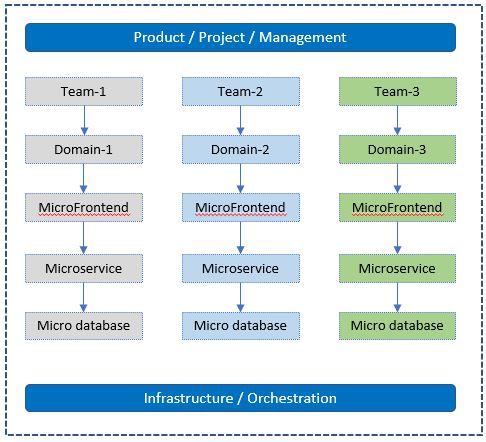
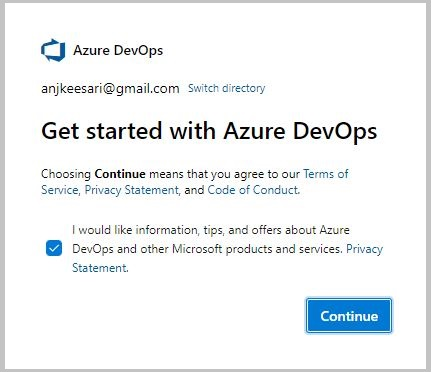
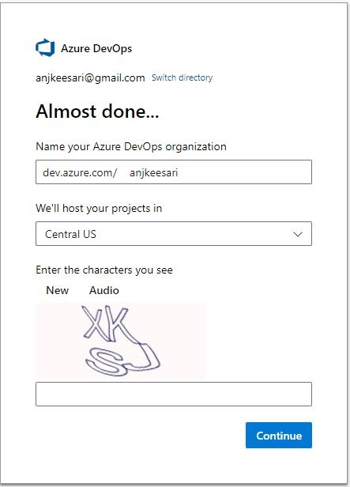
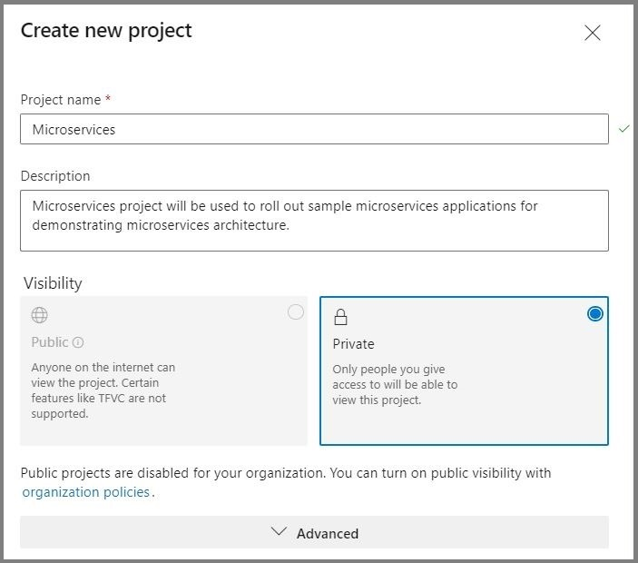
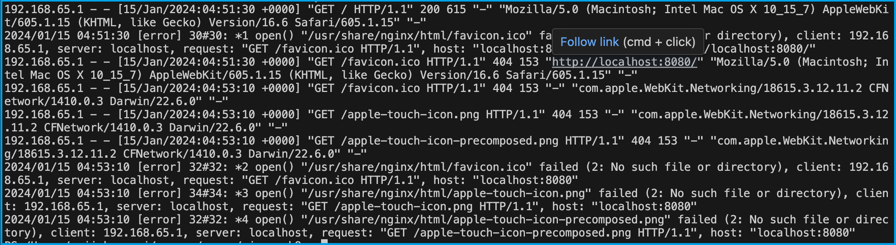
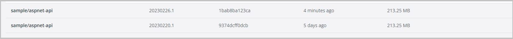
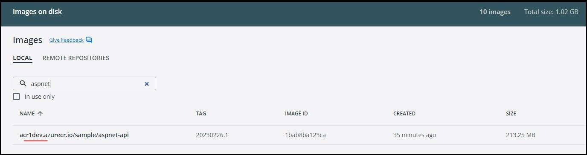
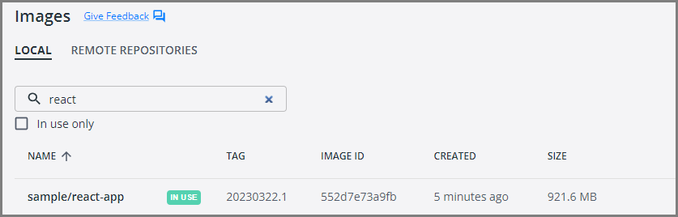
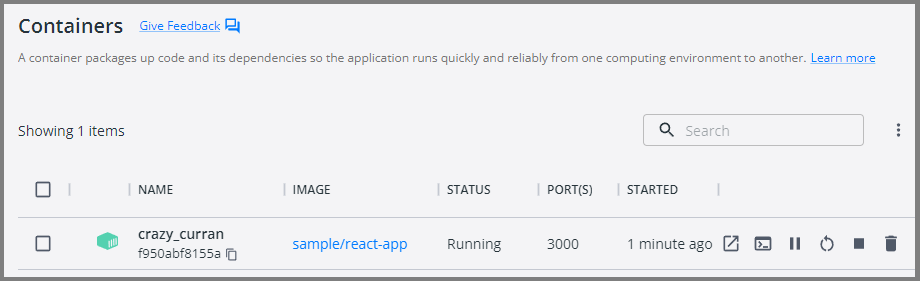

Home
Introduction
Table of Contents
- Chapter-1: Getting Started with Microservices
- What are Microservices?
- Microservices vs Monolithic Architectures
- Advantages of Microservices
- Challenges and Considerations
- Key Technologies and Tools
- Microservices Communication
- Domain-Driven Design (DDD)
- Task-1: Identify Microservices for the book
- Task-2: Identify the List of Git Repositories Needed
- Task-3: Create new Azure DevOps Organization
- Task-4: Create new Azure DevOps Project
- Chapter-2: Docker Fundamentals
- Chapter-3: Getting Started with Docker
- Chapter-4: Create Your First Microservice with .NET Core Web API
- Step-1: Create a new repo in azure DevOps
- Step-2: Clone the repo from azure DevOps
- Step-3: Create a new .NET Core Web API project
- Step-4: Test the new .NET core Web API project
- Step-5: Add Dockerfiles to the API project
- Step-6: Docker Build & Run
- Step-7: Push docker container to ACR
- Step-8: Pull docker container from ACR
- Chapter-5: Create Your Second Microservice with Node.js
- Chapter-6: Create Your First Website using .NET Core MVC Application
- Chapter-7: Create Your Second Website using React.js
- Chapter-8: Create your First Database with SQL Server
- Benefits of SQL Server Container
- Step-1: Setup Git Repository for SQL Server database
- Step-2: Create Folder Structure for SQL Server database
- Step-3: Add Dockerfiles to the Database Project
- Step-4: Test the SQL Server database connection using SSMS
- Step-5: Test the SQL server database connection using Azure Data Studio
- Step-6: Push Docker Container to ACR
- Chapter-9: Setting up PostgreSQL database in a Docker Container
- Step-1: Setup Git Repository for PostgreSQL database
- Step-2: Create Folder Structure for PostgreSQL database
- Step-3: Add Dockerfiles to the Database Project
- Step-4: Create Docker Compose file
- Step-5: Test the PostgreSQL database connection from psql tool
- Step-6: Test the PostgreSQL database from pgadmin4 tool
- Step-7: Push Docker Container to ACR
- Chapter-10: Setting up Keycloak in a Docker Container
- Step-1: Setup repository for Keycloak in Azure DevOps
- Step-2: Create Keycloak project
- Step-3: Keycloak setup with docker compose
- Step-3.1: Setup Keycloak Service
- Step-3.2: Setup Keycloak Service with PostgreSQL database
- Step-4: Keycloak setup with Dockerfile
- Step-4.1: Create Dockerfile
- Step-4.2: Docker build locally
- Step-4.3: Docker run locally
- Step-5: Publish the Keycloak docker container to container registry
- Chapter-11: Setting up Drupal in a Docker Container
- Appendix:
About the Author
Anji Keesari is a software engineer and cloud architect with over 20 years of experience in the technology industry. He has been involved in numerous projects related to cloud computing, microservices architecture, and technologies such as Kubernetes, Terraform, and containers.
Anji has hands-on experience deploying and managing Kubernetes clusters in production environments. He is also proficient in tools like ArgoCD and Helm, utilizing them to deploy microservices applications on Kubernetes. Anji also has extensive knowledge of containers and containerization technologies, including Docker and container orchestration tools such as Kubernetes.
Apart from his expertise in Kubernetes and related tools, Anji has a strong background in Terraform, utilizing it to deploy infrastructure on various cloud platforms, including Azure and AWS.
Anji has a passion for teaching and sharing his knowledge with others. He has written numerous articles and tutorials on Kubernetes, ArgoCD, and Helm, and published in Medium website.
With his extensive knowledge and experience in Kubernetes, ArgoCD, and Helm, Anji is the perfect author for following two books:
- Building Microservices with Containers (A Practical Guide)
- Building Scalable Kubernetes Infrastructure for Microservices (A Practical Guide)
Throughout his career, Anji have worked with various companies in diverse domains such as Banking, Healthcare, and Finance, across countries such as India, UK, and US. He is dedicated to making a significant impact in his workplace and helping others along the way.
During his free time, Anji finds joy in various activities such as playing soccer, going hiking, exploring new places, and most importantly, spending quality time with his loved ones.
For any questions, suggestions, or topic requests, feel free to drop him a message, and he'll get in touch when his schedule permits.
Contact Information:
- Email: anjkeesari@gmail.com
- Website: https://anjikeesari.com
Acknowledgments
Writing a book is a collaborative effort, and I could not have done it without the help and support of many people.
First and foremost, I would like to thank my family for their patience, understanding, and encouragement throughout this project, they scarified lot of (long) weekends. Their love and support kept me going during the long hours of writing and editing.
During this book writing I had to refer lot of online materials, I would also like to thank the many individuals and organizations who have contributed to the development of Kubernetes, ArgoCD, Helm, Terraform, and containerization technologies. Without their hard work and dedication, this book would not be possible.
Finally, I would like to thank the readers of this book for their interest and support. I hope that this book will be a valuable resource for anyone who wants to learn how to build and deploy microservices applications on a Kubernetes using ArgoCD and Helm.
Thank you all for your contributions and support.
Warm regards,
Anji Keesari
Introduction
Welcome to Building Microservices with Containers: A Practical Guide. In today's rapidly growing technological landscape, the demand for scalable, flexible, and resilient software solutions is necessary. In response to this demand, the architecture of choice for many modern applications is microservices. Microservices enables the development of complex systems as a set of small, independently deployable services.
This book is your detailed guide to understanding and implementing microservices architecture using containerization technology, specifically Docker. Whether you're a regular application developer looking to adopt microservices or a new to the technology, this book will provide you with the knowledge and hands-on experience necessary to succeed in building scalable and maintainable applications.
Why Microservices?
Before looking into the technical details, let's briefly explore why microservices have become the architecture of choice for many organizations. Microservices offer several advantages over traditional monolithic architectures, including:
- Scalability: Microservices allow individual components of an application to scale independently, enabling better resource utilization and improved performance.
- Flexibility: With microservices, teams can choose the most appropriate technology stack for each service, leading to greater flexibility and innovation.
- Resilience: Isolating services from each other reduces the impact of failures, making the overall system more resilient.
- Continuous Delivery: Microservices facilitate continuous delivery and deployment practices, enabling teams to release updates quickly and frequently.
Why Containers?
While microservices offer numerous benefits, managing a large number of services can be challenging. This is where containerization comes into play. Containers provide lightweight, portable, and isolated environments for running applications, making it easier to package, deploy, and manage microservices at scale. Docker, one of the most popular containerization platforms, has revolutionized the way developers build, ship, and run applications.
What You'll Learn
In this book, we'll start by covering the fundamentals of microservices architecture and Docker containerization. We'll then guide you through the process of building and deploying microservices using a variety of technologies, including .NET Core, Node.js, React.js, and SQL databases. Along the way, you'll learn how to:
- Containerize microservices using Docker.
- Orchestrate containers with Docker Compose.
- Implement authentication and authorization using Keycloak.
- Build web applications with popular frameworks like .NET Core MVC and React.js.
- Set up and manage databases within containers using SQL Server and PostgreSQL.
- Deploy and scale microservices in a production environment.
Each chapter includes practical, hands-on tutorials and real-world examples to help reinforce your understanding of the concepts covered. By the end of this book, you'll have the knowledge and skills to design, build, and deploy microservices-based applications with confidence.
Who This Book Is For
This book is designed for developers, architects, and DevOps engineers who are interested in adopting microservices architecture using containerization technology. Whether you're new to microservices or looking to expand your knowledge, this book will provide you with the essential tools and techniques to succeed in today's growing software development landscape.
Developers:
- If you're a developer looking to moving from traditional monolithic architectures to microservices, this book will provide you with the necessary knowledge and practical skills to design, develop, and deploy microservices-based applications using containerization technology.
- Whether you specialize in a specific programming language or framework, the hands-on tutorials and real-world examples in this book will help you gain a deeper understanding of how to implement microservices using a variety of technologies, including .NET Core, Node.js, React.js, SQL databases, and more.
Architects:
- For architects responsible for designing and planning the architecture of modern applications, this book will serve as a comprehensive guide to understanding the principles, patterns, and best practices of microservices architecture.
- You'll learn how to design scalable, resilient, and maintainable systems using microservices and containerization technology, and how to address common challenges such as service discovery, communication, and data management in distributed environments.
DevOps Engineers:
- If you're a DevOps engineer tasked with managing the deployment, scaling, and monitoring of microservices-based applications, this book will help you with the necessary skills to leverage containerization tools like Docker and orchestration platforms like Kubernetes.
- You'll learn how to automate the deployment process, implement continuous integration and continuous delivery (CI/CD) pipelines, and ensure the reliability and performance of microservices in production environments.
Students and Researchers:
- This book can also be valuable for students and researchers studying software engineering, and cloud computing. It provides a practical, hands-on approach to learning about microservices architecture and containerization technology, with real-world examples and case studies to illustrate key concepts.
Key Benefits of Reading This Book:
Building Microservices with Containers: A Practical Guide offers a lot of benefits to readers at various stages of their application development journey in understanding and implementing microservices architecture with containerization technology. Here are some key benefits you can expect from reading this book:
Hands-On Tutorials:
- Benefit from step-by-step tutorials and real-world examples that guide you through the process of building and deploying microservices using Docker containers.
- Gain practical experience by working on hands-on exercises and projects designed to reinforce your learning and enhance your skills.
Diverse Technology Stack:
- Explore a diverse range of technologies and frameworks, including .NET Core, Node.js, React.js, SQL databases, Docker, and Kubernetes.
- Learn how to choose the right tools and technologies for your specific use case, and how to integrate them effectively to build scalable and resilient applications.
Transition from Monolithic to Microservices:
- Understand the benefits and challenges of transitioning from monolithic architectures to microservices, and how to plan and execute a successful migration strategy.
- Learn how to decompose monolithic applications into smaller, loosely-coupled services, and how to leverage containerization to improve scalability, flexibility, and resilience.
Whether you're a developer, architect, DevOps engineer, student, or researcher, Building Microservices with Containers: A Practical Guide offers valuable insights, practical skills, and career advancement opportunities that will empower you to succeed in today's dynamic and fast-paced software development landscape.
Hands-On Labs
Here is the high-level list of labs we will cover in this chapter:
Lab-1: Getting Started with Microservices - In this lab, we'll introduce you to the concept of microservices and explain their importance in modern application development. You'll gain a high-level understanding of microservices architecture and its benefits.
Lab-2: Getting Started with Docker - Here, we'll look into Docker, the modern containerization technology. You'll learn how to install docker, run your first container, and explore basic docker commands.
Lab-3: Create your First Containerized Microservice with .NET Core - This lab guides you through creating a microservice using .NET Core and containerizing it with Docker. You'll learn how to write Dockerfiles and build container images for .NET Core microservices.
Lab-5: Create your Second Containerized Microservice with Node.js - In this lab, we switch gears to Node.js and create another microservice. You'll containerize a Node.js-based microservice and understand the differences compared to .NET Core.
Lab-6: Create your First Containerized Website using ASP.NET Core MVC - Now, it's time to create a containerized website using ASP.NET Core MVC. You'll build a web application, package it as a Docker image, and run it as a container.
Lab-7: Create your Second Containerized Website using React JS - In this lab, we'll focus on front-end development by creating a React.js-based website. You'll containerize a React application and understand how to work with front-end containers.
Lab-8: Create your First Database with SQL Server - Databases are an essential part of microservices. In this lab, we'll set up a SQL Server database within a container. You'll learn how to create and connect to containerized databases.
Lab-9: Create your Second Database with PostgreSQL - PostgreSQL is another popular database choice. This lab guides you through running PostgreSQL in a docker container and executing scripts. You'll understand how to work with different database engines within containers.
Lab-10: Running Keycloak application in a Docker Container - External services play a important role in microservices. In this lab, we'll run Keycloak application, an identity and access management system, in a Docker container. You'll configure and interact with Keycloak within the containerized environment.
Lab-11: Running Drupal website in a Docker Container - Continuing with external services, we'll set up Drupal website, a content management system, in a Docker container. You'll explore how to work with content management systems within containers.
These hands-on labs provide a practical foundation for building and containerizing microservices. By the end of these labs, you'll have hands-on experience with various technologies and a clear understanding of how to create and run microservices and external services in containers. This knowledge will be invaluable as we progress through the chapters and explore more advanced microservices concepts and deployment strategies.
Categories of Labs:
Labs in this Chapter are categorized into four areas, these categories provide a structured approach to learning containerization across different aspects of web development, from APIs and websites to databases and external services. By completing labs in each category, participants will gain comprehensive knowledge and skills essential for modern application development practices.
- Creating Containerized APIs (API Development)
- Creating Containerized Websites (Website Development)
- Setting Up Databases in Containers (Database Containers)
- Running External Services in Docker Containers (External Services)
Creating Containerized APIs
Labs created within this category, you'll learn how to create containerized APIs using technologies like .NET Core Web API, Node.js.
.NET Core Web API:
-
Introduction to .NET Core Web API: We'll start by introducing you to .NET Core Web API, a cross-platform framework for building Restful services.
-
Setting Up an .NET Core Web API Project: We'll guide you through setting up a new .NET Core Web API project.
-
Containerization with Docker: You'll learn how to package your .NET Core Web API as a Docker container. We'll provide guidance on creating a Dockerfile for your web application.
-
Running the Containerized .NET Core Web API: You'll see how to run your containerized .NET Core Web API locally and understand how containers simplify deployment.
Node.js APIs:
-
Introduction to Node.js: Node.js is a popular JavaScript library for building Restful services. We'll introduce you to Node.js and explain its role in modern Rest APIs development.
-
Creating a Node.js Rest API: You'll learn how to create a Node.js API from scratch.
-
Containerization with Docker: Similar to .NET Core Web API, we'll guide you through containerizing your Node.js API. You'll create a Dockerfile for your Restful service.
-
Running the Containerized Node.js API: You'll see how to run your containerized Node.js API locally.
By the end of these labs, you'll have hands-on experience with .NET Core Web API and Node.js along with the knowledge of how to containerize web applications. These skills are essential as we move forward to deploy these containerized websites alongside microservices in later chapters.
Creating Containerized Websites
Labs created within this category, you'll learn how to create containerized websites using technologies like ASP.NET Core, MVC and React.js.
ASP.NET Core MVC:
-
Introduction to ASP.NET Core MVC: We'll start by introducing you to ASP.NET Core MVC, a cross-platform framework for building web applications. You'll understand its role in creating dynamic web content.
-
Setting Up an ASP.NET Core MVC Project: We'll guide you through setting up a new ASP.NET Core MVC project.
-
Containerization with Docker: You'll learn how to package your ASP.NET Core MVC application as a Docker container. We'll provide guidance on creating a Dockerfile for your web application.
-
Running the Containerized ASP.NET Core MVC Application: You'll see how to run your containerized ASP.NET Core MVC application locally and understand how containers simplify deployment.
React.js:
-
Introduction to React.js: React.js is a popular JavaScript library for building user interfaces. We'll introduce you to React.js and explain its role in modern web development.
-
Creating a React.js Application: You'll learn how to create a React.js application from scratch.
-
Containerization with Docker: Similar to ASP.NET Core MVC, we'll guide you through containerizing your React.js application. You'll create a Dockerfile for your web app.
-
Running the Containerized React.js Application: You'll see how to run your containerized React.js application locally.
By the end of these labs, you'll have hands-on experience with ASP.NET Core MVC and React.js, along with the knowledge of how to containerize web applications. These skills are essential as we move forward to deploy these containerized websites alongside microservices in later chapters.
Setting Up Databases in Containers
Labs created within this category, we'll learn setting up databases within containers for microservices data storage. You'll learn how to create containerized database instances using SQL Server and PostgreSQL.
Microservices often rely on databases to store and manage data. Containerizing databases offers numerous advantages, such as isolation, portability, and versioning. In this section, we'll focus on two popular database systems: SQL Server and PostgreSQL.
SQL Server:
-
Introduction to SQL Server: We'll introduce you to SQL Server, a robust relational database management system (RDBMS) developed by Microsoft.
-
Containerization with Docker: You'll learn how to containerize SQL Server by pulling an official SQL Server Docker image from the Azure Container registry or Docker Hub.
-
Running SQL Server in a Docker Container: We'll guide you through running a SQL Server container, configuring database settings, and connecting to the containerized SQL Server instance.
-
Data Management: You'll explore data management tasks within a containerized SQL Server, such as creating databases, tables, and performing CRUD (Create, Read, Update, Delete) operations.
-
Connecting to database locally: Finally you'll explore different tools like SQL Server Management Studio (SSMS) and Azure data studio for connecting to containerized SQL Server database.
PostgreSQL:
-
Introduction to PostgreSQL: We'll introduce you to PostgreSQL, a powerful open-source relational database system known for its scalability and extensibility.
-
Containerization with Docker: You'll learn how to containerize PostgreSQL by pulling an official PostgreSQL Docker image from the Docker Hub.
-
Running PostgreSQL in a Docker Container: We'll guide you through running a PostgreSQL container, configuring database settings, and connecting to the containerized PostgreSQL instance.
-
Data Management: You'll explore data management tasks within a containerized PostgreSQL database, including creating databases, tables, and executing SQL queries.
-
Connecting to database locally: Finally you'll explore different tools like
PSQLand Pgadmin4 for connecting to containerized PostgreSQL database.
By the end of these labs, you'll have hands-on experience with containerized SQL Server and PostgreSQL databases, understanding their role in microservices data storage. These skills are important as you proceed through the chapters, where microservices will interact with these containerized databases to retrieve and store data.
Running External Services in Containers
Labs created within this category, we'll learn integration of external services into your microservices architecture. You'll learn how to run external services like Keycloak and Drupal in Docker containers, enhancing the capabilities of your microservices.
External services play a importent role in microservices architecture, providing essential functionalities such as authentication and content management. Containerizing these external services offers several advantages, including consistency and simplified deployment. In this section, we'll focus on two prominent external services: Keycloak and Drupal.
Keycloak:
-
Introduction to Keycloak: Keycloak is an open-source identity and access management system. We'll introduce you to Keycloak and explain its significance in microservices authentication.
-
Containerization with Docker: You'll learn how to containerize Keycloak by pulling an official Keycloak Docker image from the Docker Hub.
-
Running Keycloak in a Docker Container: We'll guide you through running a Keycloak container, configuring realms, users, and roles within the containerized Keycloak instance.
-
Testing the Keycloak Application Locally: Finally you'll see how to browse your containerized Keycloak application locally and login into admin portal and intacting with Keycloak application.
Drupal:
-
Introduction to Drupal: Drupal is a popular open-source content management system (CMS). We'll introduce you to Drupal and its role in managing content for microservices.
-
Containerization with Docker: You'll learn how to containerize Drupal by pulling an official Drupal Docker image from the Docker Hub.
-
Running Drupal in a Docker Container: We'll guide you through running a Drupal container, setting up a website, and managing content within the containerized Drupal instance.
-
Testing the Drupal Website Locally: Finally you'll see how to browse your containerized Drupal Website locally and login into drupal portal and intacting with drupal website.
By the end of these labs, you'll have hands-on experience with containerized Keycloak and Drupal instances, understanding how to integrate them seamlessly into your microservices ecosystem. These skills are essential as you proceed through the chapters, where microservices will rely on these external services for authentication, authorization, and content management.
Microservices
Chapter-1: Getting Started with Microservices
Overview
Welcome to the first chapter of our book. In this chapter, we will begin our journey by understanding microservices architectures and how they are different comparing with traditional monolithic architectures. We'll also learn the advantages of the microservices architectures, including scalability, flexibility, and easier maintenance. we will also learn challenges with microservices and considerations that need to be carefully addressed, key technologies and communication patterns. Finally we will perform four tasks such as identifying list of microservices, git repos needed, create org and project in azure devops to continue our journey in this book.
Objective
In this exercise, our objective is to accomplish and learn the following tasks:
- What are Microservices?
- Microservices vs Monolithic Architectures
- Advantages of Microservices
- Challenges and Considerations
- Key Technologies and Tools
- Microservices Communication
- Domain-Driven Design (DDD)
- Task-1: Identify Microservices for the book
- Task-2: Identify the List of Git Repositories Needed
- Task-3: Create new Azure DevOps Organization
- Task-4: Create new Azure DevOps Project
What are Microservices?
Microservices are architectural style that structures an application as a collection of small, independent, and loosely coupled services. These services, known as microservices , are designed to be self-contained and focused on specific functions or features of the application. Unlike monolithic applications, where all components are tightly integrated into a single codebase, microservices allow for the decomposition of an application into smaller, manageable parts.
Key Characteristics:
- Autonomous and independently deployable
- Organized around business capabilities
- Technology-agnostic (can be built using different languages/platforms)
- Decentralized data management
- Fault isolation
Microservices vs Monolithic Architectures
Monolithic Architectures:
- In a monolithic architecture, the entire application is built as a single, unified codebase.
- All components of the application, including user interfaces, business logic, and data access layers, are tightly coupled.
- Scaling a monolithic application typically involves replicating the entire application, even if only specific parts require additional resources.
- Maintenance and updates often require making changes to the entire codebase, making it challenging to isolate and fix issues.
Microservices:
- Microservices architecture promotes breaking down the application into smaller, independent services.
- Each microservice is responsible for a specific application's functionality.
- Microservices can be developed, deployed, and scaled independently.
- Updates and maintenance are easier to manage, as changes to one microservice do not impact the entire system.
Advantages of Microservices
Microservices architecture offers several advantages, including:
-
Scalability: Microservices can be easily scaled horizontally to handle increased traffic, ensuring that the system remains responsive during high-demand periods.
-
Flexibility: Developers can work on individual microservices without affecting the entire application. This makes it easier to introduce new features, fix bugs, or update a specific service without disrupting the entire system.
-
Easy Maintenance: Smaller, self-contained services are typically easier to maintain and manage. Updates and changes can be isolated to specific microservices, reducing the risk of unintended consequences.
-
Improved Fault Isolation: When a microservice fails, it usually doesn't bring down the entire system. Failures are contained within the affected service, minimizing the impact on the overall application.
-
Technology Agnosticism: Microservices allow you to use different technologies and programming languages for different services, which can be chosen based on the specific requirements of each service.
-
Rapid Development: Smaller teams can work independently on microservices, enabling faster development cycles and quicker time-to-market for new features or products.
-
Enhanced Testing: Isolated microservices can be tested more thoroughly, leading to better quality assurance and reduced testing complexity compared to monolithic applications.
-
Easier Deployment: Smaller, independent services are easier to deploy, reducing the risk of deployment failures and making it possible to implement continuous integration and continuous delivery (CI/CD) practices.
Challenges and Considerations
While microservices offer numerous advantages, they also come with their set of challenges and considerations that need to be carefully addressed. Careful planning and architectural decisions are important for realizing the benefits of microservices while mitigating their challenges.
Challenges of microservices
-
Complexity: Microservices introduce complexity, as an application is divided into multiple services, each with its own codebase, data store, and dependencies. Managing the interactions between microservices and ensuring the overall system's integrity can be challenging.
-
Data Consistency: Maintaining data consistency in a distributed microservices architecture can be complex. With each microservice managing its data, ensuring data synchronization and integrity across services is important.
-
Distributed Systems Issues: Microservices are inherently distributed, which introduces challenges such as network latency, message serialization, and handling communication failures. Implementing robust error handling and resilience mechanisms becomes essential.
-
Operational Complexity: Managing and monitoring a large number of microservices in a production environment can be operationally complex. Tools and practices for deployment, monitoring, and scaling need to be in place to ensure smooth operations.
Considerations for Microservices Adoption
-
Application Complexity: Microservices are well-suited for complex, large-scale applications with multiple modules or functionalities. For simpler applications, a monolithic architecture may be more appropriate.
-
Team Structure: Consider your organization's team structure. Microservices often align with small, cross-functional teams that can own and manage individual microservices. Ensure your teams have the necessary skills for microservices development and operations.
-
Scalability and Performance: Microservices can provide scalability benefits, particularly for applications with varying workloads. Evaluate whether your application requires the ability to scale individual components independently.
-
Frequent Updates: If your application requires frequent updates and releases, microservices can support continuous integration and deployment practices. Ensure you have the necessary CI/CD pipelines and infrastructure.
Choosing the Right Architecture
The choice between monolithic and microservices architecture depends on various factors, including the complexity of the application, team structure, scalability requirements, and development speed. Monolithic architectures excel in simplicity and are suitable for smaller applications with straightforward requirements. Microservices, on the other hand, offer flexibility and scalability for larger, more complex applications but introduce operational complexities.
Key Technologies and Tools
Microservices development relies on a set of essential technologies and tools that facilitate the creation, deployment, and management of individual microservices.
-
Docker: Docker is a containerization platform that allows developers to package applications and their dependencies into lightweight containers. Docker containers provide consistency in deployment across different environments, ensuring that microservices run reliably on any system.
-
DevContainers: DevContainers streamline the development and testing of microservices locally by providing a controlled, isolated, and consistent environment that enhances collaboration among team members and simplifies the management of complex microservices ecosystems.
-
Kubernetes: Kubernetes is a container orchestration platform that automates the deployment, scaling, and management of containerized applications, including microservices. Kubernetes simplifies the management of microservices at scale, enabling features like load balancing, auto-scaling, and rolling updates.
-
API Gateways: API gateways act as a front-end for microservices, providing a unified entry point for clients and handling tasks such as authentication, rate limiting, and request routing. API gateways simplify client interactions with microservices, centralize security controls, and enable API versioning and documentation.
-
Continuous Integration/Continuous Deployment (CI/CD) Tools: CI/CD tools such as Azure DevOps, Argocd, Helmcharts automate the building, testing, and deployment of microservices, supporting rapid development and delivery. CI/CD pipelines streamline the development process, allowing for frequent updates and reducing the risk of errors.
-
Monitoring and Observability Tools (e.g., Prometheus, Grafana, Jaeger): Monitoring and observability tools provide insights into the performance, availability, and behavior of microservices, helping to detect and troubleshoot issues. These tools ensure the reliability of microservices in production by offering real-time monitoring, logging, and tracing capabilities.
Microservices Communication
Microservices can communicate with each other using different communication patterns, both synchronous and asynchronous.
Synchronous:
-
HTTP/HTTPS: Microservices can communicate over standard HTTP/HTTPS protocols, making it easy to create RESTful APIs or web services. Synchronous communication is suitable for scenarios where immediate responses are required.
-
gRPC: gRPC is a high-performance, language-agnostic remote procedure call (RPC) framework that allows microservices to communicate efficiently. It is ideal for scenarios where low-latency, binary-encoded communication is needed.
Asynchronous:
-
Message Queues (e.g., RabbitMQ, Apache Kafka): Microservices can exchange messages through message queues or publish-subscribe systems. Asynchronous communication is useful for decoupling services and handling background tasks or event-driven scenarios.
-
Event Sourcing and Event-driven Architecture: In event-driven architecture, microservices issue and consume events to communicate changes or trigger actions. This pattern is beneficial for building scalable, loosely coupled systems that respond to real-time events.
Domain-Driven Design (DDD)
Domain-Driven Design (DDD) is a set of principles, patterns, and techniques for designing applicatio with a focus on the domain of the problem being solved. In the context of microservices architecture, DDD plays a importantent role in helping you define the boundaries of your microservices and ensure that they align with your business domain. Here's how DDD techniques can be applied in microservices architecture:
-
Bounded Contexts:In DDD, a bounded context is a specific boundary within which a domain model is defined and applicable. In microservices, each microservice typically corresponds to a bounded context. Bounded contexts ensure that each microservice has a well-defined scope and encapsulates a specific aspect of the business domain.
-
Aggregates: Aggregates in DDD represent a cluster of domain objects treated as a single unit. In microservices, an aggregate can be considered a microservice that manages a set of related entities. Microservices encapsulate aggregates and provide APIs for manipulating them. This helps maintain data consistency and isolation.
-
Entities and Value Objects: DDD distinguishes between entities (objects with a distinct identity) and value objects (objects with no distinct identity). In microservices, entities and value objects are used to model domain concepts within the microservice's scope, helping to define data structures and behavior.
-
Context Mapping: Context mapping in DDD deals with defining relationships and interactions between bounded contexts. It helps manage the integration points between different parts of the system. In microservices architecture, context mapping is essential for specifying how microservices interact and communicate with each other, either through APIs or messaging.
Domain-Driven Design (DDD) Example
Let’s take a detailed real-world example of a microservices-based application following Domain-Driven Design (DDD) principles. This example will helps you to understand how to identify bounded contexts, define microservices, map databases per service, and see how this all ties together into a cohesive system.
Scenario: Online Retail Platform (E-Commerce System)
You are building a modern online retail platform similar to Amazon or Flipkart. The platform needs to handle:
- Product management
- Customer management
- Orders and payments
- Inventory tracking
- Notifications
- Authentication and authorization
Applying DDD: Identify Bounded Contexts
In DDD, each bounded context becomes a candidate for a microservice. Here’s how the domain breaks down:
| Bounded Context | Description |
|---|---|
| Product Catalog | Manages product details, categories, pricing |
| Customer Management | Handles user registration, profile, and address |
| Order Management | Creates and tracks customer orders |
| Inventory | Manages stock levels per product and location |
| Payment | Handles payment processing, refunds |
| Notification | Sends emails/SMS for order updates |
| Authentication | User login, token issuance, role-based access |
Microservices List with Databases
| Microservice | Responsibility | Database | Technology Stack |
|---|---|---|---|
| ProductService | Add/update product catalog, categories, pricing | SQL Server / PostgreSQL | .NET Core Web API |
| CustomerService | Manage user profile, address, contact info | PostgreSQL | .NET Core Web API |
| OrderService | Place order, track order status, order history | SQL Server | .NET Core Web API |
| InventoryService | Check and update stock, warehouse mapping | MongoDB / PostgreSQL | Node.js / .NET |
| PaymentService | Handle payments, payment status, refunds | PostgreSQL | Node.js |
| NotificationService | Send order/shipping alerts via email/SMS | No DB / Redis Queue | Node.js |
| AuthService | Register/login users, token issuance, RBAC | PostgreSQL (Keycloak DB) | Keycloak (Docker) |
Each microservice:
- Has its own isolated data store
- Manages its own business rules
- Communicates with others via REST APIs or message queues
Microservice Interactions (Example Flow)
User places an order:
- AuthService validates user token.
- OrderService creates order, validates customer and product.
- ProductService provides product pricing.
- InventoryService checks and reserves stock.
- PaymentService processes payment.
- NotificationService sends confirmation email/SMS.
- OrderService updates order status.
These services can be chained using REST (synchronous) or Kafka/RabbitMQ (asynchronous).
Databases per Microservice (DB-per-Service Pattern)
Each microservice owns its own database schema and is responsible for reading/writing to it.
| Microservice | Database Type | Reason |
|---|---|---|
| ProductService | PostgreSQL | Relational data, joins for categories |
| CustomerService | PostgreSQL | Structured customer records |
| OrderService | SQL Server | Order lifecycle with transactional guarantees |
| InventoryService | MongoDB | High write-read throughput, document model |
| PaymentService | PostgreSQL | Transactional ACID compliance |
| NotificationService | Redis (Optional) | Queueing and retry tracking |
| AuthService | PostgreSQL | Used internally by Keycloak |
Task-1: Identify Microservices for the book
To fully explore the microservices architecture in this book, we will create several containerized microservices and microfrontend applications and couple of databases. These applications will allow us to demonstrate real-world scenarios and provide a practical understanding of microservices implementation. In this case study, we will create the following microservices, which will be developed in the upcoming labs. we have purposely selected diverse options to ensure a broader learning experience.
| Microservice/Website/Database | Technology Used | Name |
|---|---|---|
| First Microservice | .NET Core Web API (C#) | aspnet-api |
| Second Microservice | Node.js (Node) | nodejs-api |
| First Website | ASP.NET Core MVC (C#) | aspnet-app |
| Second Website | React.js (Node) | react-app |
| First Database | SQL Server | sqlserver-db |
| Second Database | PostgreSQL | postgresql-db |
| Keycloak | Identity and Access Management | keycloak-service |
| Drupal | Content Management System | drupal-service |
for example, here is how the folder structure of our Microservices and MicroFrontend Applications looks like .
Microservices/
├── aspnet-api/
│ ├── Controllers/
│ ├── Models/
│ ├── appsettings.json
│ ├── Program.cs
│ ├── Startup.cs
│ └── Dockerfile
│ └── aspnet-api.csproj
└── node-api/
├── routes/
├── models/
├── package.json
├── app.js
└── Dockerfile
Websites/
├── aspnet-app/
│ ├── Controllers/
│ ├── Models/
│ ├── Views/
│ ├── appsettings.json
│ ├── Program.cs
│ ├── Startup.cs
│ └── Dockerfile
│ └── aspnet-app.csproj
├── react-app/
│ ├── src/
│ ├── package.json
│ ├── public/
│ └── Dockerfile
│ ├── node_modules/
│ └── README.md
└── ...
Databases/
├── sqlserver-db/
│ ├── tables/
│ ├── procedures/
│ ├── views/
│ ├── functions/
│ └── triggers/
│ └── Dockerfile
|
└── postgresql-db/
├── tables/
├── procedures/
├── views/
├── functions/
|── Dockerfile
└── triggers/
Important
If you noticed, each project has its own Dockerfile, indicating that all these applications will be containerized and ready for deployment to a Kubernetes cluster.
The following diagram shows the conceptual view of the microservices environment

For example:

Task-2: Identify the List of Git Repositories Needed
Once you have determined the list of domains or microservices required for your project, it's time to analyze how they will be organized within the source control system, such as Git repositories. One important consideration is determining the number of Git repositories you need.
There are multiple ways to organize source code and pipelines in Azure DevOps Git, and the approach you choose depends on how you want to manage your source code and pipelines for your microservices architecture while ensuring ease of maintenance in the future.
In my preference, I recommend creating a separate Git repository for each domain or microservice. Within each domain, you may have multiple microservices, MicroFrontends, and databases.
For example, let's visualize how the Git structure may look:
- Organization1 (Name of your organization)
- Project1 (Name of the project)
- Repo-1 (for Domain1)
- APIs - Create one or more APIs with separate folders
- Websites - Create one or more websites with separate folders
- Databases - Create one or more databases with separate folders
- Repo-2 (for Domain2)
- APIs - Create one or more APIs with separate folders
- Websites - Create one or more websites with separate folders
- Databases - Create one or more databases with separate folders
- Repo-3 (for Domain3)
- APIs - Create one or more APIs with separate folders
- Websites - Create one or more websites with separate folders
- Databases - Create one or more databases with separate folders
- Repo-1 (for Domain1)
- Project2 (Project2)
- Repo-1 (Name of the repository under Project2)
- APIs - Create one or more APIs with separate folders
- Websites - Create one or more websites with separate folders
- Databases - Create one or more databases with separate folders
- Repo-1 (Name of the repository under Project2)
- Project1 (Name of the project)
Repeat this structure as the organization grows and new projects or domains are introduced.
By following this approach, each domain or microservice will have its dedicated Git repository, providing a clear separation and organization of the source code and related artifacts. This structure facilitates easier maintenance, collaboration, and version control.
Remember, this is just a sample structure, and you can adapt it based on your organization's specific needs and preferences.
Visual representation of a sample DevOps Git structure:
Organization1
└── Project1
├── Repo-1 (Microservice-1)
│ ├── APIs
│ ├── Websites
│ └── Databases
├── Repo-2 (Microservice-2)
│ ├── APIs
│ ├── Websites
│ └── Databases
├── Repo-3 (Microservice-3)
│ ├── APIs
│ ├── Websites
│ └── Databases
Project2
└── Repo-1
├── APIs
├── Websites
└── Databases
By adopting this Git structure, you can effectively manage and scale your microservices projects while ensuring a clear and organized source control system.
Task-3: Create new Azure DevOps Organization
With the planning and preparation of your Microservices application complete, the next step is to create a DevOps organization where you can manage the lifecycle of your projects.
To create a new Azure DevOps organization, follow these steps:
- Sign in to Azure DevOps. - https://dev.azure.com
- Click on
New organizationin the left nav.  - Enter name of the Organization and create new organization. 
Once you have completed these steps, you will have a new Azure DevOps organization that is ready for use. You can then invite members to join your organization and start creating new projects.
Task-4: Create new Azure DevOps Project
You need a new project in Azure DevOps to manage your source code and other project related activities.
Follow these steps to create a new project in Azure DevOps:
-
Sign in to the Azure DevOps website https://dev.azure.com/ with your Azure DevOps account.
-
Click on the
Create a projectbutton. -
Enter a name for your project and select a process template. The process template determines the default work item types, source control repository, and other settings for your project.
-
Click the
Create projectbutton to create your new project. -
Follow the screen to configure your project settings, including source control, work item types, and team members.
-
When you are finished, click the
Createbutton to complete the project creation process.
For example:
Project Name - Microservices
Description - Microservices project will be used to roll out sample microservices applications for demonstrating microservices architecture.

We have created new organization in azure DevOps and created new project so that we can start working on containerized microservices applications in the next labs.
References
Chapter-2: Exploring Docker Fundamentals
Overview
In this article, we'll explore the basics of Docker, which are like building blocks for understanding how containers work. Whether you're an experienced coder or just starting out, grasping these basics is essential for easily deploying applications in containers. These core concepts will come in handy as you continue your learning journey with docker.
What is Docker?
Docker is a powerful platform that simplifies the process of developing, shipping, and running applications. Docker uses a technology known as containerization to encapsulate an application and its dependencies into a self-contained unit called a container. These containers are lightweight, portable, and consistent across different environments.
Why use Docker?
Docker simplifies the development, deployment, and management of applications, offering an adaptable solution for modern software development practices. Its popularity comes from from its ability to address challenges related to consistency, scalability, and efficiency in the software development lifecycle.
Docker has become increasingly popular in the software development and IT industry due to its numerous advantages. Here are some key benefits of using Docker:
-
Portability: Docker containers encapsulate applications and their dependencies, ensuring consistency across different environments. This portability eliminates the common problem of "it works on my machine" and facilitates seamless deployment across various systems.
-
Isolation: Containers provide a lightweight and isolated environment for applications. Each container runs independently, preventing conflicts between dependencies and ensuring that changes made in one container do not affect others.
-
Efficiency: Docker's containerization technology enables efficient resource utilization. Containers share the host OS kernel, making them lightweight compared to traditional virtual machines. This results in faster startup times and improved performance.
-
Scalability: Docker makes it easy to scale applications horizontally by running multiple instances of containers. This scalability allows developers to change the workloads and ensures optimal resource utilization.
-
Microservices architecture: Docker is integral to the microservices architecture, where applications are composed of small, independently deployable services. Containers facilitate the development, deployment, and scaling of microservices, enabling agility and ease of management.
-
DevOps integration: Docker aligns well with DevOps practices by promoting collaboration between development and operations teams. Containers can be easily integrated into continuous integration and continuous deployment (CI/CD) pipelines, streamlining the software delivery process.
-
Community support: Docker's community offers lot of pre-made tools and solutions, helping developers work faster and learn from others.
-
Security: Docker provides built-in security features, such as isolation and resource constraints, to enhance application security.
-
Cross-platform compatibility: Docker containers can run on various operating systems, including Linux, Windows, and macOS. This cross-platform compatibility is beneficial for teams working in heterogeneous environments.
Docker concepts
Understanding these basic concepts is essential for effectively working with Docker and leveraging its advantages in terms of portability, scalability, and consistency across different environments. Here are basic concepts of Docker:
-
Containerization Containerization is a technology that allows you to package an application and its dependencies, including libraries and configuration files, into a single container image.
-
Images An image is a lightweight, standalone, and executable package that includes everything needed to run a piece of software, including the code, runtime, libraries, and system tools. Docker images are used to create containers. They are built from a set of instructions called a Dockerfile.
-
Dockerfile A Dockerfile is a text file that contains a set of instructions for building a Docker image. It specifies the base image, adds dependencies, copies files, and defines other settings necessary for the application to run.
-
Containers Containers are instances of Docker images. They run in isolated environments, ensuring that the application behaves consistently across different environments. Containers share the host OS kernel but have their own file system, process space, and network interfaces.
-
Registries Docker images can be stored and shared through registries. The default registry is Docker Hub, but private registries can also be used. Registries allow versioning, distribution, and collaboration on Docker images.
-
Docker compose Docker Compose is a tool for defining and running multi-container Docker applications. It allows you to define a multi-container application in a single file, specifying services, networks, and volumes.
-
Docker engine Docker Engine is the core component that manages Docker containers. It includes a server, REST API, and a command-line interface (CLI). The Docker daemon runs on the host machine, and the Docker CLI communicates with it to build, run, and manage containers.
-
Volumes Volumes provide a way for containers to persist data outside their lifecycle. They can be used to share data between containers or to persist data even if a container is stopped or removed.
-
Networking Docker provides networking capabilities that allow containers to communicate with each other or with the external world. Containers can be connected to different networks, and ports can be mapped between the host and the containers.
Container orchestration
Whether managing a small cluster or a large-scale production environment, adopting container orchestration is crucial for containerized applications. Here are some container orchestrations:
-
Kubernetes: Kubernetes is the most widely adopted container orchestration platform. It automates the deployment, scaling, and management of containerized applications, providing a robust and extensible framework.
-
Docker Swarm: Docker Swarm is a native clustering and orchestration solution provided by Docker. While it may not be as feature-rich as Kubernetes, it offers simplicity and seamless integration with Docker.
-
Amazon ECS: Amazon Elastic Container Service (ECS) is a fully managed container orchestration service provided by AWS. It integrates with other AWS services and is suitable for users already utilizing the AWS ecosystem.
-
Azure Kubernetes Service (AKS): AKS is a managed Kubernetes service offered by Microsoft Azure. It simplifies the deployment and management of Kubernetes clusters in the Azure cloud.
Docker Desktop
Docker Desktop is a powerful tool that provides a user-friendly interface and environment for developing, building, and testing applications using Docker containers on local machine.
Docker Desktop provides a convenient environment for developers to work with containers on their personal machines.
Install Docker
Here are the steps to install Docker on a different operating systems:
Windows:
Download Docker Desktop:
- Visit the Docker Desktop for Windows page.
- Click on the "Download for Windows" button.
- Follow the on-screen instructions to download the installer.
Install Docker Desktop:
- Run the installer that you downloaded.
- Follow the installation wizard, accepting the default options.
- The installer may require you to restart your computer.
Enable Hyper-V (Windows 10 Pro/Enterprise):
- If you're running Windows 10 Pro or Enterprise, Docker Desktop will use Hyper-V for virtualization. Ensure that Hyper-V is enabled in the Windows Features.
Start Docker Desktop:
- Once installed, start Docker Desktop from the Start Menu.
- The Docker icon will appear in the system tray when Docker Desktop is running.
macOS:
Download Docker Desktop:
- Visit the Docker Desktop for Mac page.
- Click on the "Download for Mac" button.
- Follow the on-screen instructions to download the installer.
Install Docker Desktop:
- Run the installer that you downloaded.
- Drag the Docker icon to the Applications folder.
- Launch Docker from Applications.
Start Docker Desktop:
- Once installed, Docker Desktop should start automatically.
- The Docker icon will appear in the menu bar when Docker Desktop is running.
Verify Docker install:
To verify that Docker is installed correctly, open a terminal and run the following command:
If you notice this, it indicates that your Docker is not in a running status.
error during connect: this error may indicate that the docker daemon is not running: Get "http://%2F%2F.%2Fpipe%2Fdocker_engine/v1.24/version": open //./pipe/docker_engine: The system cannot find the file specified.
Client:
Cloud integration: v1.0.35
Version: 24.0.2
API version: 1.43
Go version: go1.20.4
Git commit: cb74dfc
Built: Thu May 25 21:53:15 2023
OS/Arch: windows/amd64
Context: default
After Docker desktop is started and if everything is set up correctly, you should see following message indicating that your Docker installation is working.
Client:
Cloud integration: v1.0.35
Version: 24.0.2
API version: 1.43
Go version: go1.20.4
Git commit: cb74dfc
Built: Thu May 25 21:53:15 2023
OS/Arch: windows/amd64
Context: default
Server: Docker Desktop 4.21.1 (114176)
Engine:
Version: 24.0.2
API version: 1.43 (minimum version 1.12)
Go version: go1.20.4
Git commit: 659604f
Built: Thu May 25 21:52:17 2023
OS/Arch: linux/amd64
Experimental: false
containerd:
Version: 1.6.21
GitCommit: 3dce8eb055cbb6872793272b4f20ed16117344f8
runc:
Version: 1.1.7
GitCommit: v1.1.7-0-g860f061
docker-init:
Version: 0.19.0
GitCommit: de40ad0
Docker is now installed on your machine, and you can start using it to containerize your applications.
Docker Commands
For more comprehensive details on Docker commands, please refer to the Docker Commands Cheat Sheet on our website.
Conclusion
Docker and containerization have changed the way we build and use application development. Now that you understand the basics of Docker, you're ready to dive deeper. Docker is straightforward and flexible, making it a great tool for developers. It ensures that your application works the same way in different situations, keeps things separate, and easily grows with your needs. So, go ahead and start your journey with containers.
References
Chapter-3: Getting Started with Docker
Docker is a platform for developing, shipping, and running applications in containers. Containers allow you to package an application and its dependencies into a single unit, making it easy to deploy consistently across different environments.
In this lab, I will guide you through the process of creating Docker images, containers, and finally accessing the sample application in the web browser.
If you are new to Docker and want to learn its fundamental concepts, please visit our website. - Exploring Docker Fundamentals
Objective
In this exercise, our objective is to accomplish and learn the following tasks:
- Step 1: Get the Sample Application
- Step 2: Create Docker Image
- Step 3: Create Docker Container
- Step 4: Port Binding
- Step 5: Browse the Frontend Application
- Step 6: View Docker Logs
- Step 7: Docker Commands
Prerequisites
Before starting this lab, ensure you have the following prerequisites in place:
- Visual Studio Code : - Visual Studio Code Downloads.
- Docker desktop : - Docker Downloads.
- Git Client tool: - Git Downloads.
Verify the docker installation by running following commands:
Step 1: Get the Sample Application
To begin, you'll need a sample application to work with. You can either use an existing application or create a simple one.
In this task, we'll start by searching for an image to run locally. For example, we'll use the Nginx image from Docker Hub using the following URL: Docker Hub Search
Step 2: Create Docker Image
Now that we've identified the image we want to use, let's pull it from Docker Hub into our local Docker Desktop and run it locally.
docker pull nginx
# output
Using default tag: latest
latest: Pulling from library/nginx
a5573528b1f0: Pull complete
8897d65c8417: Pull complete
fbc138d1d206: Pull complete
06f386eb9182: Pull complete
aeb2f3db77c3: Pull complete
64fb762834ec: Pull complete
e5a7e61f6ff4: Pull complete
Digest: sha256:4c0fdaa8b6341bfdeca5f18f7837462c80cff90527ee35ef185571e1c327beac
Status: Downloaded newer image for nginx:latest
docker.io/library/nginx:latest
List Docker images from Docker Desktop:
docker images
# output
REPOSITORY TAG IMAGE ID CREATED SIZE
nginx latest 6c7be49d2a11 2 months ago 192MB
Step 3: Create Docker Container
In this step, we'll create a Docker container by running the docker run command for the image.
docker run nginx
# output
/docker-entrypoint.sh: /docker-entrypoint.d/ is not empty, will attempt to perform configuration
/docker-entrypoint.sh: Looking for shell scripts in /docker-entrypoint.d/
/docker-entrypoint.sh: Launching /docker-entrypoint.d/10-listen-on-ipv6-by-default.sh
10-listen-on-ipv6-by-default.sh: info: Getting the checksum of /etc/nginx/conf.d/default.conf
10-listen-on-ipv6-by-default.sh: info: Enabled listen on IPv6 in /etc/nginx/conf.d/default.conf
/docker-entrypoint.sh: Sourcing /docker-entrypoint.d/15-local-resolvers.envsh
/docker-entrypoint.sh: Launching /docker-entrypoint.d/20-envsubst-on-templates.sh
/docker-entrypoint.sh: Launching /docker-entrypoint.d/30-tune-worker-processes.sh
/docker-entrypoint.sh: Configuration complete; ready for start up
2024/01/15 04:27:56 [notice] 1#1: using the "epoll" event method
2024/01/15 04:27:56 [notice] 1#1: nginx/1.25.3
2024/01/15 04:27:56 [notice] 1#1: built by gcc 12.2.0 (Debian 12.2.0-14)
2024/01/15 04:27:56 [notice] 1#1: OS: Linux 6.3.13-linuxkit
2024/01/15 04:27:56 [notice] 1#1: getrlimit(RLIMIT_NOFILE): 1048576:1048576
2024/01/15 04:27:56 [notice] 1#1: start worker processes
2024/01/15 04:27:56 [notice] 1#1: start worker process 29
2024/01/15 04:27:56 [notice] 1#1: start worker process 30
2024/01/15 04:27:56 [notice] 1#1: start worker process 31
2024/01/15 04:27:56 [notice] 1#1: start worker process 32
2024/01/15 04:27:56 [notice] 1#1: start worker process 33
Open a new terminal and run the following command to list containers:
dockder ps
# output
CONTAINER ID IMAGE COMMAND CREATED STATUS PORTS NAMES
8d23e3ceb3da nginx "/docker-entrypoint.…" 3 minutes ago Up 2 minutes 80/tcp lucid_edison
You can watch the container logs in the first terminal.
To exit the container, press Ctrl + C.
2024/01/15 04:28:00 [notice] 1#1: signal 28 (SIGWINCH) received
2024/01/15 04:28:00 [notice] 1#1: signal 28 (SIGWINCH) received
2024/01/15 04:30:50 [notice] 1#1: signal 28 (SIGWINCH) received
2024/01/15 04:30:50 [notice] 1#1: signal 28 (SIGWINCH) received
docker run -d nginx
# output
6f5dbcae83bd3ac6a0ea8bdb45f753bf72a723179503d4b4ebce4ddeae2378e2
# Now, you can run the following command to see the list of running containers:
docker ps
Alternatively, you can also run the image directly from Docker Hub. Here are the example commands:
docker run nginx:1.25.3-alpine
# output
Unable to find image 'nginx:1.25.3-alpine' locally
1.25.3-alpine: Pulling from library/nginx
2c03dbb20264: Pull complete
0ed066aadd11: Pull complete
4eeb1ddd7404: Pull complete
9ba8827f116b: Pull complete
2bc60ecca38f: Pull complete
11d942ec6258: Pull complete
fed1b403bb45: Pull complete
392e92e0a8e8: Pull complete
Digest: sha256:a59278fd22a9d411121e190b8cec8aa57b306aa3332459197777583beb728f59
Status: Downloaded newer image for nginx:1.25.3-alpine
/docker-entrypoint.sh: /docker-entrypoint.d/ is not empty, will attempt to perform configuration
/docker-entrypoint.sh: Looking for shell scripts in /docker-entrypoint.d/
/docker-entrypoint.sh: Launching /docker-entrypoint.d/10-listen-on-ipv6-by-default.sh
10-listen-on-ipv6-by-default.sh: info: Getting the checksum of /etc/nginx/conf.d/default.conf
10-listen-on-ipv6-by-default.sh: info: Enabled listen on IPv6 in /etc/nginx/conf.d/default.conf
/docker-entrypoint.sh: Sourcing /docker-entrypoint.d/15-local-resolvers.envsh
/docker-entrypoint.sh: Launching /docker-entrypoint.d/20-envsubst-on-templates.sh
/docker-entrypoint.sh: Launching /docker-entrypoint.d/30-tune-worker-processes.sh
/docker-entrypoint.sh: Configuration complete; ready for start up
2024/01/15 04:39:23 [notice] 1#1: using the "epoll" event method
2024/01/15 04:39:23 [notice] 1#1: nginx/1.25.3
2024/01/15 04:39:23 [notice] 1#1: built by gcc 12.2.1 20220924 (Alpine 12.2.1_git20220924-r10)
2024/01/15 04:39:23 [notice] 1#1: OS: Linux 6.3.13-linuxkit
2024/01/15 04:39:23 [notice] 1#1: getrlimit(RLIMIT_NOFILE): 1048576:1048576
2024/01/15 04:39:23 [notice] 1#1: start worker processes
2024/01/15 04:39:23 [notice] 1#1: start worker process 29
2024/01/15 04:39:23 [notice] 1#1: start worker process 30
2024/01/15 04:39:23 [notice] 1#1: start worker process 31
2024/01/15 04:39:23 [notice] 1#1: start worker process 32
2024/01/15 04:39:23 [notice] 1#1: start worker process 33
docker ps
# output
CONTAINER ID IMAGE COMMAND CREATED STATUS PORTS NAMES
4df5f0ae77d9 nginx:1.25.3-alpine "/docker-entrypoint.…" About a minute ago Up About a minute 80/tcp nostalgic_lamarr
6f5dbcae83bd nginx "/docker-entrypoint.…" 6 minutes ago Up 6 minutes 80/tcp modest_hermann
docker images from docker desktop
docker containers from docker desktop
you can also run following commnds to see images and containers running locally.
docker image ls
# output
REPOSITORY TAG IMAGE ID CREATED SIZE
nginx latest 6c7be49d2a11 2 months ago 192MB
nginx 1.25.3-alpine 74077e780ec7 2 months ago 43.5MB
docker container ls
# output
CONTAINER ID IMAGE COMMAND CREATED STATUS PORTS NAMES
4df5f0ae77d9 nginx:1.25.3-alpine "/docker-entrypoint.…" 5 minutes ago Up 5 minutes 80/tcp nostalgic_lamarr
6f5dbcae83bd nginx "/docker-entrypoint.…" 10 minutes ago Up 10 minutes 80/tcp modest_hermann
Step 4: Port Binding
Your application is now running inside the Docker container, and you've mapped port 8080 from the container to your host. This means you can access your application using http://localhost:8080 in your web browser.
docker run -d -p 8080:80 nginx:1.25.3-alpine
# output
f21ada11af57b799c9b834d0a6c8e6e1628c6289d64cf65fdc0968cbe94500fd
Step 5: Browse the Frontend Application
Open your web browser and navigate to http://localhost:8080 to access your Node.js application running in the Docker container.
Step 6: View Docker Logs
To view the logs of your running container, use the following command:
This will display the logs generated by your application.
docker ps -a
# output
CONTAINER ID IMAGE COMMAND CREATED STATUS PORTS NAMES
f21ada11af57 nginx:1.25.3-alpine "/docker-entrypoint.…" 7 minutes ago Up 7 minutes 0.0.0.0:8080->80/tcp nifty_goldberg
4df5f0ae77d9 nginx:1.25.3-alpine "/docker-entrypoint.…" 19 minutes ago Up 19 minutes 80/tcp nostalgic_lamarr
6f5dbcae83bd nginx "/docker-entrypoint.…" 25 minutes ago Exited (0) 10 minutes ago modest_hermann
8d23e3ceb3da nginx "/docker-entrypoint.…" 31 minutes ago Exited (0) 25 minutes ago lucid_edison
Naming the Container:
You can also name the container using the --name flag:
docker run --name nginx-app -d -p 8080:80 nginx:1.25.3-alpine
# output
58e464680a8da16b717171732fb1b67b678b1c8efb115f9adad8d3257c6cc875
# run following command to see the name
docker ps
docker logs nginx-app
Step 7: Docker Commands
For more comprehensive details on Docker commands, please refer to the Docker Commands Cheat Sheet on our website.
Conclusion
In summary, this guide introduced you to Docker, a tool that simplifies how we build, package, and run applications. We've covered essential steps, like getting an example application (nginx), creating Docker images and running containers. We've also learned how to manage ports, access apps in web browsers, and check what's happening behind the scenes with Docker logs. Plus, we touched on some common Docker commands.
Docker is a powerful tool for containerization, enabling you to package and deploy applications with ease. By following these steps, you've created your first Docker application.
References
Chapter-4: Create Your First Microservice with .NET Core Web API
Introduction
Welcome to the first lab in our Microservices chapter. In this lab, we will look into creating a simple RESTful service using the ASP.NET Core Web API project template.
This lab will demonstrate the process of building a RESTful service and generating a docker container using Dockerfile. By following this example, you will learn the fundamentals of creating RESTful APIs using the ASP.NET Core.
Technical Scenario
As a Backend (BE) developer, you have been tasked with creating a RESTful service using .NET Core Web API, which is one of the services on our microservices list. This lab will serve as your introduction to the Microservices Architecture, starting with the basics of setting up a repository, creating a small project, and ultimately containerizing the microservice you build. The containerized microservice will then be pushed to the Azure Container Registry (ACR).
The primary objective of this lab is to prepare an application for deployment on Kubernetes. The microservices you create in this lab will be utilized in subsequent labs, such as the creation of DevOps pipelines or the deployment to Azure Kubernetes Services (AKS). By completing this lab, you will gain a foundational understanding of how microservices can be developed, containerized, and integrated into a Kubernetes environment.
Objective
In this exercise, our objective is to accomplish and learn the following tasks:
- Step-1: Create a new repo in azure DevOps
- Step-2: Clone the repository
- Step-3: Create a new Web API project
- Step-4: Test Web API project
- Step-5: Add Dockerfiles to the project
- Step-6: Build & Test docker container locally
- Step-7: Publish docker container to ACR
Prerequisites
Before starting this lab, ensure you have the following prerequisites in place:
- An Organization in Azure DevOps
- A Project in Azure DevOps
- Create Repository permission
- Git client tool
- Download and install software for .NET development
- Docker and the VS Code Docker extension
- Azure Container Registry (ACR)
Architecture Diagram
The following diagram shows the high level steps to create the Restful service using .NET Core.
Step-1: Create a new repo in azure DevOps
We will create a new repository in Azure DevOps to store our project code and related files.
To create a new repository in Azure DevOps, follow these steps:
- Login into azure DevOps - Azure DevOps
- Select the project where we want to create the repo
- Click on
Reposleft nav link - From the repo drop-down, select
New repository - In the
Create a new repositorydialog, verify that Git is the repository type and enter a name for the new repository. - You can also add a README and create a
.gitignorefor the type of code you plan to manage in the repo. - I'd prefer to use lower case for all repos (one of the best practice)
- Repo name -
aspnetapi
- Repo name -
Best-practice
When creating repositories in Azure DevOps, it is recommended to use lower case for all repository names. Using lower case consistently throughout your repositories helps maintain consistency, readability, and ease of navigation within your projects.
By adhering to this best practice, you ensure that your repository names are uniform and standardized, regardless of the specific domain or microservice they represent. This practice promotes clarity and reduces the chances of confusion or inconsistencies when working with multiple repositories within your organization.
For example:
Step-2: Clone the repo from azure DevOps
After creating the repository, we will clone it locally to establish a local working copy of the project.
To clone a repository from Azure DevOps, you will need to have the Git client installed on your local machine. follow these steps to clone the source code locally:
-
Sign in to the Azure DevOps website Azure DevOps Login with your Azure DevOps account.
-
Navigate to the project that contains the repository you want to clone.
-
Click on the
Repostab in the navigation menu. -
Find the repository you want to clone and click on the
Clonebutton. -
Copy the URL of the repository.
-
Open a terminal window or command prompt on your local machine, and navigate to the directory where you want to clone the repository.
-
Run the following command to clone the repository:
When prompted, enter your Azure DevOps credentials.
The repository will be cloned to your local machine, and you can start working with the code.
Examples:
C:\Users\anji.keesari>cd C:\Source\Repos
C:\Source\Repos>git clone https://keesari.visualstudio.com/Microservices/_git/aspnetapi
or
# cloning from main branch for the first time
git clone git clone https://keesari.visualstudio.com/Microservices/_git/aspnetapi -b main C:\Source\Repos\Microservices\aspnetapi
# cloning from feature branches
git clone https://keesari.visualstudio.com/Microservices/_git/aspnetapi -b develop C:\Source\Repos\Microservices\aspnetapi
Please refer to our Git Cheat-Sheet, which provides a comprehensive list of Git commands and their usage.
Step-3: Create a new .NET Core Web API project
Using the .NET Core Web API template, we will create a new project that serves as the foundation for our RESTful service.
We will be using Visual Studio Code instead of Visual Studio to make things faster and easy and save time and money.
Best-practice
I recommend using Visual Studio Code (VS Code) as your preferred development environment instead of Visual Studio.
Visual Studio Code is a lightweight, cross-platform code editor that offers powerful features and extensions tailored for modern development workflows. It provides a streamlined and customizable interface, allowing you to focus on coding without unnecessary overhead.
To create a new .NET Core Web API project, you will need to have the .NET Core SDK installed on your machine. You can download the .NET Core SDK from the .NET website Download .NET.
Once you have the .NET Core SDK installed, follow these steps to create a new .NET Core Web API project:
- Open a terminal window and navigate to the directory where you want to create your project.
- Run the
dotnet newcommand to create a new .NET Core Web API project: Let's take a look some usefuldotnetcommand before creating the project. Use this command to get thedotnetcommands help so that your get idea on how use these commands better. Use this command to get list of availabledotnetproject templatesUse this command to actually create new projectdotnet new --list # output These templates matched your input: Template Name Short Name Language Tags -------------------------------------------- ------------------- ---------- ------------------------------------- ASP.NET Core Empty web [C#],F# Web/Empty ASP.NET Core gRPC Service grpc [C#] Web/gRPC ASP.NET Core Web API webapi [C#],F# Web/WebAPI ASP.NET Core Web App razor,webapp [C#] Web/MVC/Razor Pages ASP.NET Core Web App (Model-View-Controller) mvc [C#],F# Web/MVC ASP.NET Core with Angular angular [C#] Web/MVC/SPA ASP.NET Core with React.js react [C#] Web/MVC/SPA ASP.NET Core with React.js and Redux reactredux [C#] Web/MVC/SPA Blazor Server App blazorserver [C#] Web/Blazor Blazor WebAssembly App blazorwasm [C#] Web/Blazor/WebAssembly/PWA Class Library classlib [C#],F#,VB Common/Library Console App console [C#],F#,VB Common/Console . . and more....Additional Notes:dotnet new webapi -o aspnetapi or dotnet new webapi -o aspnetapi --no-https -f net7.0 cd aspnetapi code . or code -r ../aspnetapi`-o` parameter creates a directory `--no-https` flag creates an app that will run without an HTTPS certificate `-f` parameter indicates creation # Output C:\WINDOWS\system32>cd C:\Source\Repos C:\Source\Repos>dotnet new webapi -o aspnetapi The template "ASP.NET Core Web API" was created successfully. Processing post-creation actions... Running 'dotnet restore' on C:\Source\Repos\aspnetapi\aspnetapi.csproj... Determining projects to restore... Restored C:\Source\Repos\aspnetapi\aspnetapi.csproj (in 247 ms). Restore succeeded. C:\Source\Repos>cd aspnetapi C:\Source\Repos\aspnetapi>code . - Here is the example of adding packages to .net projects.
- Run the following command to restore the project's dependencies:
Mac
If you're on a Mac with an Apple M1 chip, you need to install the Arm64 version of the SDK before following above commands.
Check the install typing by running following in terminal
You should see an output similar to the following if the installation is successful
anjikeesari@Anjis-MacBook-Pro-2 MyMicroservice % dotnet
Usage: dotnet [options]
Usage: dotnet [path-to-application]
Options:
-h|--help Display help.
--info Display .NET information.
--list-sdks Display the installed SDKs.
--list-runtimes Display the installed runtimes.
path-to-application:
The path to an application .dll file to execute.
Step-4: Test the new .NET core Web API project
dotnet build
Run the following command to build the project:
dotnet build command will look for the project or solution file in the current directory and compile the code in it. It will also restore any dependencies required by the project and create the output files in the bin directory.
dotnet build
# output
Microsoft (R) Build Engine version 17.0.1+b177f8fa7 for .NET
Copyright (C) Microsoft Corporation. All rights reserved.
Determining projects to restore...
All projects are up-to-date for restore.
AspNetApi -> C:\Source\Repos\AspNetApi\aspnet-api\bin\Debug\net6.0\AspNetApi.dll
Build succeeded.
0 Warning(s)
0 Error(s)
Time Elapsed 00:00:01.51
dotnet run
Run the following command to start the development server:
dotnet run command will look for the project or solution file in the current directory and compile the code in it. After compiling, it will run the application and any output will be displayed in the console.
dotnet run
# output
Building...
info: Microsoft.Hosting.Lifetime[14]
Now listening on: https://localhost:7136
info: Microsoft.Hosting.Lifetime[14]
Now listening on: http://localhost:5136
info: Microsoft.Hosting.Lifetime[0]
Application started. Press Ctrl+C to shut down.
info: Microsoft.Hosting.Lifetime[0]
Hosting environment: Development
info: Microsoft.Hosting.Lifetime[0]
Content root path: C:\Source\Repos\AspNetApi\aspnet-api\
You will notice the URL in the output, copy the URL and paste it in your favorite browser. you will get a 404 error. don’t worry. Just type swagger at the end of the URL and press enter and you will get the following webpage.
-
https://localhost:7136/swagger/index.html - Swagger URL
-
https://localhost:7136/api/aspnetapi/v1/weatherforecast - API endpoint URL
If you are able to see this swagger URL in your browser then everything is created and setup as expected.
Use the following command to stop the application in VS Code
It is time to push your basic project template source into Azure DevOps Git repo.Best-practice
To maintain good version control and ensure a reliable development process, it is strongly recommended to commit and push source code changes to your Git repository before proceeding to the next step.
Use these git commands to push the source code.
Step-5: Add Dockerfiles to the API project
Dockerfiles will be added to the project, which provide instructions for building a container image of our Web API application.
There are multiple way to create Dockerfile depending on your code editor.
Here are the step-by-step instructions for creating a Dockerfile in a .NET Core Web API project:
- First, open your .NET Core Web API project in Visual Studio code or your favorite code editor.
- Next, create a new file in the root directory of your project and name it Dockerfile (with no file extension).
-
Open the Dockerfile and add the following code to the file:
This code defines a Docker image that is based on the aspnet:6.0 image from Microsoft's container registry. The image is divided into four stages:#See https://aka.ms/containerfastmode to understand how Visual Studio uses this Dockerfile to build your images for faster debugging. FROM mcr.microsoft.com/dotnet/aspnet:6.0 AS base WORKDIR /app EXPOSE 80 EXPOSE 443 FROM mcr.microsoft.com/dotnet/sdk:6.0 AS build WORKDIR /src COPY ["AspNetApi.csproj", "."] RUN dotnet restore "./AspNetApi.csproj" COPY . . WORKDIR "/src/." RUN dotnet build "AspNetApi.csproj" -c Release -o /app/build FROM build AS publish RUN dotnet publish "AspNetApi.csproj" -c Release -o /app/publish FROM base AS final WORKDIR /app COPY --from=publish /app/publish . ENTRYPOINT ["dotnet", "AspNetApi.dll"] -
base:sets up the working directory and exposes port 80. build:restores the project dependencies, builds the project in Release mode, and copies the build output to the /app/build directory.publish:publishes the project in Release mode and copies the published output to the /app/publish directory.final:sets the working directory to/appand copies the published output from thepublishstage to the current directory. It also specifies the entry point for the container, which is thedotnetcommand with the name of your project's DLL file.
Step-6: Docker Build & Run
We will build the Docker container locally using the Dockerfiles and ensure that the containerized application functions as expected.
docker build is a command that allows you to build a Docker image from a Dockerfile. The Dockerfile is a text file that contains instructions for Docker to build the image, including the base image to use, the files to include, the commands to run, and the ports to expose.
To build and publish a container image for a .NET Core Web API project, you will need to have Docker installed on your machine. You can download Docker from the Docker website Get Started with Docker
Once you have Docker installed, follow these steps to build and publish a container for your .NET Core Web API project:
- Open a terminal window and navigate to the root of the project.
- Run the
docker buildcommand to build the Docker image: output Verify the new image
if you open the docker desktop you should be able to see the newly created image there.

3. Run the docker run command to start a container based on the image:
info: Microsoft.Hosting.Lifetime[14]
Now listening on: http://[::]:80
info: Microsoft.Hosting.Lifetime[0]
Application started. Press Ctrl+C to shut down.
info: Microsoft.Hosting.Lifetime[0]
Hosting environment: Production
info: Microsoft.Hosting.Lifetime[0]
Content root path: /app/
Open a web browser and navigate to http://localhost:8080/api/values (or whatever URL corresponds to your Web API endpoint) to confirm that the Web API is running inside the Docker container.
use these links for testing when you run docker command from vs code
- http://localhost:8080/swagger/index.html
- http://localhost:8080/api/aspnetapi/v1/heartbeat/ping
- http://localhost:8080/api/aspnetapi/v1/weatherforecast
Best-practice
When working with Docker containers, it is recommended to follow a consistent naming convention to ensure clarity and organization. The following pattern is suggested for naming Docker containers:
docker build -t projectname/domainname/appname:yyyymmdd.sequence .
example:
docker build -t project1/sample/aspnet-api:20230226 .
You've successfully created a Dockerfile and built a Docker image for your .NET Core Web API project. You can now distribute the Docker image to other machines or deploy it to a cloud service like Azure or AWS.
Tip
If you need to clean up containers and images locally in Docker Desktop, you can use the following commands:
# To delete all containers including its volumes use,
# docker rm -vf $(docker ps -aq)
# To delete all the images,
# docker rmi -f $(docker images -aq)
Step-7: Push docker container to ACR
Finally, we will publish the built Docker container to the Azure Container Registry (ACR), making it accessible for deployment and distribution.
Now we've Docker Containers ready for push to Container Registry so that we can use them in future labs.
To publish a Docker container image to Azure Container Registry (ACR), you will need to have the following:
- Create an Azure Container Registry. If you don't have one, you can create one by following the instructions in the Azure Portal or using Azure CLI. As part of the Chapter-2 we will create this azure resource, you can come back to this steps after ACR is created.
- Log in to your Azure Container Registry using the Docker command-line interface. You can do this by running the following command:
# azure Login az login # set the azure subscription az account set -s "anji.keesari" # Log in to the container registry az acr login --name acr1dev # To get the login server address for verification az acr list --resource-group rg-acr-dev --query "[].{acrLoginServer:loginServer}" --output table # output should look similar to this. # AcrLoginServer # ------------------ # acr1dev.azurecr.io Tagyour Docker container with the full name of your Azure Container Registry, including the repository name and the version tag. You can do this by running the following command: Use this command to see a list of your current local images- Push your Docker container to your Azure Container Registry using the Docker command-line interface. You can do this by running the following command:
docker push acr1dev.azurecr.io/sample/aspnet-api:20230226.1 # output The push refers to repository [acr1dev.azurecr.io/sample/aspnet-api] a592c2e20b23: Pushed 5f70bf18a086: Layer already exists d57ad0aaee3b: Layer already exists aff5d88d936a: Layer already exists b3b2bd456a19: Layer already exists 2540ef4bc011: Layer already exists 94100d1041b6: Layer already exists bd2fe8b74db6: Layer already exists 20230226.1: digest: sha256:026ec79d24fca0f30bcd90c7fa17e82a2347cf7bc5ac5d762a630277086ed0d1 size: 1995 - Wait for the push to complete. Depending on the size of your Docker container and the speed of your internet connection, this may take a few minutes.
- Verify the newly pushed image to ACR.
- Show the new tags of a image in the acr
You've successfully pushed your Docker container to Azure Container Registry. You can now use the Azure Portal or Azure CLI to manage your container and deploy them to Azure services like Azure Kubernetes Service (AKS).
Step-8: Pull docker container from ACR
Pull docker container from ACR is something may be helpful during container troubleshooting.
To pull a Docker container from Azure Container Registry (ACR), you need to perform the following steps:
- Log in to your Azure Container Registry using the Docker command-line interface. You can do this by running the following command:
- Pull your Docker container from your Azure Container Registry using the Docker command-line interface. You can do this by running the following command:
docker pull acr1dev.azurecr.io/sample/aspnet-api:20230226.1 # output 20230226.1: Pulling from sample/aspnet-api 01b5b2efb836: Already exists c4c81489d24d: Already exists 95b82a084bc9: Already exists bb369c4b0f26: Already exists c888ac593815: Already exists 14ce87409b2e: Already exists 4f4fb700ef54: Already exists d15d1be868b7: Already exists Digest: sha256:026ec79d24fca0f30bcd90c7fa17e82a2347cf7bc5ac5d762a630277086ed0d1 Status: Downloaded newer image for acr1dev.azurecr.io/sample/aspnet-api:20230226.1 acr1dev.azurecr.io/sample/aspnet-api:20230226.1 - Wait for the pull to complete. Depending on the size of your Docker container and the speed of your internet connection, this may take a few minutes. 
- Verify the recently pulled container from ACR to make sure it running as expected Test the container running following URL
http://localhost:8080/swagger/index.html
You've successfully pulled your Docker container from Azure Container Registry. You can now use the Docker command-line interface to manage your container and run them locally or deploy them to other environments.
Reference
- Microsoft MSDN - Tutorial: Create a web API with ASP.NET Core
- Microsoft MSDN - Create and deploy a cloud-native ASP.NET Core microservice
- Microsoft MSDN - .NET Tutorial - Your First Microservice
- Visual Studio Core - ASP.NET Core in a container
- Visual Studio Core - Docker in Visual Studio Code
- Visual Studio Core - Node.js in a container
- github - ASP.NET Core Docker Sample
- Containerize a .NET application
Chapter-5: Create Your Second Microservice with Node.js
Introduction
Welcome to the second lab in our Microservices chapter. In this session, I will guide you through the creation of a simple RESTful service using the Node.js npx express-generator project template.
This lab aims to illustrate the process of building a RESTful service and generating a Docker container using a Dockerfile. By following this example, you will gain a solid understanding of the fundamentals involved in creating RESTful APIs with Node.js.
Technical Scenario
As a Backend (BE) developer, you have been tasked with creating a RESTful service using Node JS, which is one of the services on our microservices list. This lab will serve as your introduction to the Microservices Architecture, starting with the basics of setting up a repository, creating a small API project, and ultimately containerizing the microservice you build. The containerized microservice will then be pushed to the Azure Container Registry (ACR).
The primary objective of this lab is to prepare an application for deployment on Kubernetes. The microservices you create in this lab will be utilized in subsequent labs, such as the creation of DevOps pipelines or the deployment to Azure Kubernetes Services (AKS). By completing this lab, you will gain a foundational understanding of how microservices can be developed, containerized, and integrated into a Kubernetes environment.
Objective
In this exercise, our objective is to accomplish and learn the following tasks:
- Step-1: Setup repository in Azure DevOps.
- Step-2: Create a new Node.js API project.
- Step-3: Test Node.js API project.
- Step-4: Add Dockerfiles to the project.
- Step-5: Docker build locally.
- Step-6: Docker run locally.
- Step-7: Publish the Docker container to ACR.
Prerequisites
Before starting this lab, ensure you have the following prerequisites in place:
- Node.js and npm: - Node.js Downloads.
- Docker and the VS Code Docker extension : - Docker Downloads.
- Git Client tool: - Git Downloads.
- A project in Azure DevOps and Git Repository: Initialize a Git repository for your Node.js application.
- Azure Container Registry (ACR)
Architecture Diagram
The following diagram shows the high level steps to create the Rest API using Node JS.
Step-1: Setup repository in Azure DevOps.
For this project, you can either leverage an existing Git repository created in our first chapter or initiate a new one.
To clone an existing repository, execute the following command:
Step-2: Create a new Node JS API project
In this step, we will set up a new Node.js API project using a basic Express application as our example. To expedite the process, we'll utilize Express's scaffolding tool to generate the necessary directory structure and essential files.
Open your terminal and execute the following commands:
npx express-generator:
The npx express-generator command initializes the project, creating a structure that includes directories like 'bin' and 'routes'.
npm install:
Ensure you run npm install to set up and configure all required Node.js modules.
This step ensures that your project is equipped with the necessary dependencies, allowing seamless integration with Docker and efficient containerization of your Node.js application.
folder structure
you've established the foundation for your Node.js API project, complete with a standardized directory structure and essential files.
This should have created a number of files in your directory, including bin and routes directories. Make sure to run npm install so that npm can get all of your Node.js modules set up and ready to use.
Step-3: Test the Node JS API project
Now, let's verify that our Node.js API project is functioning correctly. We'll initiate the application for the first time, utilizing the default routes defined in app.js.
Ensure you are in the project directory, and in your terminal, execute the following command to start the application:
This command launches the Node.js application, making it accessible locally.
Open your web browser and navigate to http://localhost:3000
You confirm that your Node.js API project is up and running on your local environment. This preliminary test ensures the initial functionality of your application before proceeding with additional configurations or containerization.
Step-4: Add Dockerfiles to the MVC project
To seamlessly containerize our Node.js API project, let's create a Dockerfile in the root directory of your project and incorporate the following code. The Dockerfile provides instructions for building a container image of our Node.js API.
# Use the official Node.js image from Docker Hub with a specific version
FROM node:18.16.0-alpine3.17
# Create a directory for the application in the container
RUN mkdir -p /opt/app
# Set the working directory inside the container to /opt/app
WORKDIR /opt/app
# Copy package.json and package-lock.json to the container's working directory
COPY src/package.json src/package-lock.json .
# Install Node.js dependencies based on the package.json and package-lock.json
RUN npm install
# Copy the entire contents of the 'src' directory to the container's working directory
COPY src/ .
# Expose port 3000 to allow external access to the application
EXPOSE 3000
# Specify the command to run when the container starts (start the application)
CMD ["npm", "start"]
Note
Read inline comments of the Dockerfile for understanding the Dockerfile instructions
Step-5: Docker build locally
We will build the Docker container locally using the Dockerfiles and ensure that the containerized application functions as expected.
The docker build command is used to build Docker images from a Dockerfile.
output
When you run the docker build command, Docker looks for a Dockerfile in the specified directory (PATH) and reads the instructions in the file to build a new image.
The Dockerfile contains a series of instructions that define how to build the image, such as copying files, running commands, and setting environment variables.
Step-6: Docker run locally
Run the Docker container locally to verify that the application functions correctly within a containerized environment. This step ensures that the containerized application operates as expected on your local machine.
Run the docker run command to start a container based on the image:
Compiled successfully!
You can now view node-api in the browser.
Local: http://localhost:3000
On Your Network: http://172.17.0.2:3000
Note that the development build is not optimized.
To create a production build, use npm run build.
webpack compiled successfully
Compiling...
Compiled successfully!
webpack compiled successfully
Image

Container

This will start the Node.js application in the Docker container and map the container's port 3000 to your local machine's port 3000.
Your Node.js application is now running inside a Docker container.
Open your favorite browser and enter the following URL to see the running application in port 3000
You now have a basic Node.js application up and running. From here, you can continue building out your application by adding more and more code as per your requirements.
Step-7: Push docker container to ACR
Now that we have Docker containers ready locally, it's time to push them to the Container Registry for future deployment on Azure Kubernetes Services (AKS). This step is crucial for preparing the container for deployment in a cloud environment.
To publish a Docker container to Azure Container Registry (ACR), you will need to have the following:
Create an Azure Container Registry. If you don't have one, you can create one by following the instructions in the Azure Portal or using Azure CLI.
Log in to your Azure Container Registry using the Docker command-line interface. You can do this by running the following command:
# azure Login
az login
# set the azure subscription
az account set -s "anji.keesari"
# Log in to the container registry
az acr login --name acr1dev
# Login Succeeded
# To get the login server address for verification
az acr list --resource-group rg-acr-dev --query "[].{acrLoginServer:loginServer}" --output table
# output should look similar to this.
# AcrLoginServer
# ------------------
# acr1dev.azurecr.io
list all the Docker images that are available on the local system
docker images
# output
REPOSITORY TAG IMAGE ID CREATED SIZE
sample/aspnet-app 20230312.1 587f347206bc 8 minutes ago 216MB
.
.
.
Tag your Docker container image with the full name of your Azure Container Registry, including the repository name and the version tag. You can do this by running the following command:
Push your Docker container image to your Azure Container Registry using the Docker command-line interface. You can do this by running the following command:
docker push acr1dev.azurecr.io/sample/node-api:20240101.1
# Output
The push refers to repository [acr1dev.azurecr.io/sample/node-api]
649a035a1734: Pushed
4061bd2dd536: Pushed
c0257b3030b0: Pushed
912a3b0fc587: Pushed
a36186d93e25: Pushed
a3d997b065bc: Pushed
65d358b7de11: Pushed
f97384e8ccbc: Pushed
d56e5e720148: Pushed
beee9f30bc1f: Pushed
20240101.1: digest: sha256:73f0669d18c6cae79beb81edc8c523191710f9ec4781d590884b46326f9ad6f9 size: 2419
Wait for the push to complete. Depending on the size of your Docker container image and the speed of your internet connection, this may take a few minutes.
Verify the newly pushed image to ACR.
az acr repository list --name acr1dev --output table
# Output
Result
-------------------------------
mcr.microsoft.com/dotnet/aspnet
mcr.microsoft.com/dotnet/sdk
sample/aspnet-api
sample/aspnet-app
sample/node-api
Show the new tags of a image in the acr
az acr repository show-tags --name acr1dev --repository sample/node-api --output table
# output
Result
----------
20240101.1
You've successfully pushed your Docker container image to Azure Container Registry. You can now use the Azure Portal or Azure CLI to manage your container images and deploy them to Azure services like Azure Kubernetes Service (AKS).
Conclusion
So, we've covered Docker and learned how to run a basic Node.js application inside a container. Now, you should feel confident and ready to create your own Dockerfile, tapping into the cool features that Docker brings to your development experience.
Reference
Chapter-6: Create Your First Website using .NET Core MVC Application
Introduction
In our previous labs, we have explored the creation of Microservices to demonstrate the Microservices architecture pattern. In this lab and the next, we will shift our focus to the MicroFrontend architecture pattern by creating a couple of MicroFrontend UI applications.
Technical Scenario
As a Frontend (FE) developer, your task is to develop a website or UI application using ASP.NET Core MVC technology. This application represents one of the small Website (UI) components in our MicroFrontend applications list.
This lab will guide you through the process of building an ASP.NET Core MVC application. We will begin by creating a new Git repository or utilizing an existing one. Next, we will generate an MVC project template and proceed to containerize the UI application. Finally, we will push the containerized UI application to the Azure Container Registry (ACR) in preparation for deployment to Azure Kubernetes Services (AKS).
The objective is to prepare a UI application for deployment on Kubernetes. The UI applications developed in this lab will be utilized in subsequent labs, such as the creation of DevOps pipelines or the deployment to Azure Kubernetes Services.
Objective
In this exercise, our objective is to accomplish and learn the following tasks:
- Step-1: Create a new ASP.NET Core Web App (MVC project)
- Step-2: Test ASP.NET MVC project
- Step-3: Update home page contents [optional]
- Step-4: Add Dockerfiles to MVC project
- Step-5: Docker Build locally
- Step-6: Docker Run locally
- Step-7: Publish docker container to ACR
Prerequisites
Before starting this lab, make sure you have the following prerequisites in place:
- Clone existing Microservices repo
- Download and install software for .NET development
- Docker desktop
- VS Code Docker extension
- Azure Container Registry (ACR)
Architecture Diagram
The following diagram shows the high level steps to create the website using ASP.NET Core MVC.
Step-1: Create a new ASP.NET Core Web App (MVC project)
Create a new ASP.NET Core Web App using the MVC project template. This will serve as the foundation for our UI application.
To create new ASP.NET Core Web App (Model-View-Controller) project you can use either Visual Studio Code or Visual Studio 2022 (latest version).
Using Visual Studio Code
Assuming you already have the .NET Core SDK installed in your system, follow these steps to create a new .NET Core MVC project:
Open Visual Studio Code and open the terminal and use following command to see list of templates.
output
These templates matched your input:
Template Name Short Name Language Tags
-------------------------------------------- ------------------- ---------- -------------------------------------
ASP.NET Core Empty web [C#],F# Web/Empty
ASP.NET Core gRPC Service grpc [C#] Web/gRPC
ASP.NET Core Web API webapi [C#],F# Web/WebAPI
ASP.NET Core Web App razor,webapp [C#] Web/MVC/Razor Pages
ASP.NET Core Web App (Model-View-Controller) mvc [C#],F# Web/MVC
ASP.NET Core with Angular angular [C#] Web/MVC/SPA
ASP.NET Core with React.js react [C#] Web/MVC/SPA
ASP.NET Core with React.js and Redux reactredux [C#] Web/MVC/SPA
Blazor Server App blazorserver [C#] Web/Blazor
Blazor WebAssembly App blazorwasm [C#] Web/Blazor/WebAssembly/PWA
Class Library classlib [C#],F#,VB Common/Library
Console App console [C#],F#,VB Common/Console
.
.
and more....
Pick the following template for our MVC project from the list.
Usedotnet new command to create new MVC project
output
The template "ASP.NET Core Web App (Model-View-Controller)" was created successfully.
This template contains technologies from parties other than Microsoft, see https://aka.ms/aspnetcore/6.0-third-party-notices for details.
Processing post-creation actions...
Running 'dotnet restore' on C:\Source\Repos\microservices\aspnet-app\aspnet-app.csproj...
Determining projects to restore...
Restored C:\Source\Repos\microservices\aspnet-app\aspnet-app.csproj (in 95 ms).
Restore succeeded.
Using Visual Studio 2022
In case if you want to use Visual Studio only then, here are the steps to create a new ASP.NET Core Web App using the Model-View-Controller (MVC) architectural pattern:
- Open Visual Studio and select "Create a new project".
- In the "Create a new project" window, select "ASP.NET Core Web Application" and click "Next".
- Choose a name and location for your project and click "Create".
- In the "Create a new ASP.NET Core Web Application" window, select "Web Application (Model-View-Controller)" and click "Create".
Visual Studio will create a new project for you with the necessary files and folders to get started.
Once the MVC project is created successfully you will see the project folder structure like below:
cd to the new folder here aspnet-app
Step-2: Test the new ASP.NET core Web App project
Perform testing of the ASP.NET MVC project to ensure its functionality and identify any issues or bugs that may need to be addressed.
Run the following command to build the project:
dotnet build command will look for the project or solution file in the current directory and compile the code in it. It will also restore any dependencies required by the project and create the output files in the bin directory.
output
Microsoft (R) Build Engine version 17.0.1+b177f8fa7 for .NET
Copyright (C) Microsoft Corporation. All rights reserved.
Determining projects to restore...
All projects are up-to-date for restore.
aspnet-app -> C:\Source\Repos\microservices\aspnet-app\bin\Debug\net6.0\aspnet-app.dll
Build succeeded.
0 Warning(s)
0 Error(s)
Time Elapsed 00:00:05.07
dotnet run command will look for the project or solution file in the current directory and compile the code in it. After compiling, it will run the application and any output will be displayed in the console.
output
Building...
info: Microsoft.Hosting.Lifetime[14]
Now listening on: https://localhost:7289
info: Microsoft.Hosting.Lifetime[14]
Now listening on: http://localhost:5023
info: Microsoft.Hosting.Lifetime[0]
Application started. Press Ctrl+C to shut down.
info: Microsoft.Hosting.Lifetime[0]
Hosting environment: Development
info: Microsoft.Hosting.Lifetime[0]
Content root path: C:\Source\Repos\microservices\aspnet-app\
You will notice the URL in the output, copy the URL and paste it in your favorite browser. https://localhost:7289/
For the first time if you are able to see this page in your browser that means ASP.NET MVC project is created as expected.
Use these git commands to push the source code to remote git.
Note
For the simplicity I am creating all the applications in the same repo called microservices but in reality you may need to follow your organization standards for creating git repos
New folder structure will look like below in the microservices git repo. you will notice the new aspnet-app folder with MVC project source code.
Step-3: Update home page contents[Optional]
Let's update our landing page to show .NET version, Operating System, processor, CPU core etc.. this information will provide us some technical details of the application when we deploy it in our AKS in the upcoming labs.
We are going to update the Index.html file with following code.
@page
@using System.Runtime.InteropServices
@using System.IO
@using System.Diagnostics
@{
//ViewData["Title"] = "Home page";
var hostName = System.Net.Dns.GetHostName();
var ipList = await System.Net.Dns.GetHostAddressesAsync(hostName);
const long Mebi = 1024 * 1024;
const long Gibi = Mebi * 1024;
GCMemoryInfo gcInfo = GC.GetGCMemoryInfo();
string totalAvailableMemory = GetInBestUnit(gcInfo.TotalAvailableMemoryBytes);
bool cgroup = RuntimeInformation.OSDescription.StartsWith("Linux") && Directory.Exists("/sys/fs/cgroup/memory");
string memoryUsage = string.Empty;
string memoryLimit = string.Empty;
if (cgroup)
{
string usage = System.IO.File.ReadAllLines("/sys/fs/cgroup/memory/memory.usage_in_bytes")[0];
string limit = System.IO.File.ReadAllLines("/sys/fs/cgroup/memory/memory.limit_in_bytes")[0];
memoryUsage = GetInBestUnit(long.Parse(usage));
memoryLimit = GetInBestUnit(long.Parse(limit));
}
}
<div align="center">
<table class="table table-striped table-hover">
<tr>
<td>.NET version</td>
<td>@RuntimeInformation.FrameworkDescription</td>
</tr>
<tr>
<td>Operating system</td>
<td>@RuntimeInformation.OSDescription</td>
</tr>
<tr>
<td>Processor architecture</td>
<td>@RuntimeInformation.OSArchitecture</td>
</tr>
<tr>
<td>CPU cores</td>
<td>@Environment.ProcessorCount</td>
</tr>
<tr>
<td>Containerized</td>
<td>@(Environment.GetEnvironmentVariable("DOTNET_RUNNING_IN_CONTAINER") is null ? "false" : "true")</td>
</tr>
<tr>
<td>Memory, total available GC memory</td>
<td>@totalAvailableMemory</td>
</tr>
@if (cgroup)
{
<tr>
<td>cgroup memory usage</td>
<td>@memoryUsage</td>
</tr>
<tr>
<td>cgroup memory limit</td>
<td>@memoryLimit</td>
</tr>
}
<tr>
<td>Host name</td>
<td>@hostName</td>
</tr>
<tr>
<td style="vertical-align: top">Server IP address</td>
<td>
@{
foreach (var ip in ipList)
{
@ip
<br />
}
}
</td>
</tr>
</table>
</div>
@{
string GetInBestUnit(long size)
{
if (size < Mebi)
{
return $"{size} bytes";
}
else if (size < Gibi)
{
decimal mebibytes = Decimal.Divide(size, Mebi);
return $"{mebibytes:F} MiB";
}
else
{
decimal gibibytes = Decimal.Divide(size, Gibi);
return $"{gibibytes:F} GiB";
}
}
}
Now it is time to commit our source code
Step-4: Add Dockerfiles to the MVC project
This file define the necessary instructions to build Docker images for the application.
Create a Dockerfile in the root directory of the MVC project and copy following code.
#See https://aka.ms/containerfastmode to understand how Visual Studio uses this Dockerfile to build your images for faster debugging.
# Use the official Microsoft ASP.NET Core runtime image as a parent image
FROM mcr.microsoft.com/dotnet/aspnet:6.0 AS base
WORKDIR /app
EXPOSE 80
EXPOSE 443
# Copy the project files and restore dependencies
FROM mcr.microsoft.com/dotnet/sdk:6.0 AS build
WORKDIR /src
COPY ["aspnet-app.csproj", "."]
RUN dotnet restore "./aspnet-app.csproj"
# Copy the remaining files and build the application
COPY . .
WORKDIR "/src/."
RUN dotnet build "aspnet-app.csproj" -c Release -o /app/build
# Publish the application
FROM build AS publish
RUN dotnet publish "aspnet-app.csproj" -c Release -o /app/publish
# Final image
FROM base AS final
WORKDIR /app
COPY --from=publish /app/publish .
# Start the application
ENTRYPOINT ["dotnet", "aspnet-app.dll"]
Note
Read inline comments of the Dockerfile for understanding the Dockerfile instructions
Step-5: Docker Build locally
Build Docker images locally using the Dockerfiles added to the MVC project. This process will generate container images ready for deployment.
The docker build command is used to build Docker images from a Dockerfile. The Dockerfile contains a set of instructions that Docker uses to create a new image.
-t to specify a name and optionally a tag for the image,
output
[+] Building 49.9s (18/18) FINISHED
=> [internal] load build definition from Dockerfile
=> => transferring dockerfile: 696B
=> [internal] load .dockerignore
=> => transferring context: 2B
=> [internal] load metadata for mcr.microsoft.com/dotnet/sdk:6.0
=> [internal] load metadata for mcr.microsoft.com/dotnet/aspnet:6.0
.
.
.
=> exporting to image
=> => exporting layers
=> => writing image sha256:587f347206bcc67dafe3c0b53047862f11b6e52b1b61bce15b8432cc3a488e24
=> => naming to docker.io/sample/aspnet-app:20230312.1
When you run the docker build command, Docker looks for a Dockerfile in the specified directory (PATH) and reads the instructions in the file to build a new image. The Dockerfile contains a series of instructions that define how to build the image, such as copying files, running commands, and setting environment variales.
Error & troubleshooting
In case if you are getting following error while running docker build command, that means the docker desktop is not running locally. make sure that run the docker desktop locally to fix this issue.
error during connect: This error may indicate that the docker daemon is not running.: Post "http://%2F%2F.%2Fpipe%2Fdocker_engine/v1.24/build?buildargs=%7B%7D&cachefrom=%5B%5D&cgroupparent=&cpuperiod=0&cpuquota=0&cpusetcpus=&cpusetmems=&cpushares=0&dockerfile=Dockerfile&labels=%7B%7D&memory=0&memswap=0&networkmode=default&rm=1&shmsize=0&t=sample%2Faspnet-app%3A20230312.1&target=&ulimits=null&version=1": open //./pipe/docker_engine: The system cannot find the file specified.
Step-6: Docker Run locally
Run the Docker container locally to verify that the application functions correctly within a containerized environment. This step ensures that the containerized application operates as expected on your local machine.
Run the docker run command to start a container based on the image:
output
warn: Microsoft.AspNetCore.DataProtection.Repositories.FileSystemXmlRepository[60]
Storing keys in a directory '/root/.aspnet/DataProtection-Keys' that may not be persisted outside of the container. Protected data will be unavailable when container is destroyed.
warn: Microsoft.AspNetCore.DataProtection.KeyManagement.XmlKeyManager[35]
No XML encryptor configured. Key {90c41ec3-18a3-434a-8d4b-1d0cc5f140af} may be persisted to storage in unencrypted form.
info: Microsoft.Hosting.Lifetime[14]
Now listening on: http://[::]:80
info: Microsoft.Hosting.Lifetime[0]
Application started. Press Ctrl+C to shut down.
info: Microsoft.Hosting.Lifetime[0]
Hosting environment: Production
info: Microsoft.Hosting.Lifetime[0]
Content root path: /app/
warn: Microsoft.AspNetCore.HttpsPolicy.HttpsRedirectionMiddleware[3]
Failed to determine the https port for redirect.
You now have a basic ASP.NET Core Web App using the MVC pattern up and running. From here, you can continue building out your application by adding more controllers, views, and models as needed.
Step-7: Push docker container to ACR
Publish the Docker container to the Azure Container Registry (ACR) for future deployment to Azure Kubernetes Services (AKS). This step prepares the container for deployment to the cloud environment.
Now we've Docker Containers ready locally for push to Container Registry so that we can use them in future labs.
To publish a Docker container to Azure Container Registry (ACR), you will need to have the following:
Create an Azure Container Registry. If you don't have one, you can create one by following the instructions in the Azure Portal or using Azure CLI.
Log in to your Azure Container Registry using the Docker command-line interface. You can do this by running the following command:
# azure Login
az login
# set the azure subscription
az account set -s "anji.keesari"
# Log in to the container registry
az acr login --name acr1dev
# To get the login server address for verification
az acr list --resource-group rg-acr-dev --query "[].{acrLoginServer:loginServer}" --output table
# output should look similar to this.
# AcrLoginServer
# ------------------
# acr1dev.azurecr.io
list all the Docker images that are available on the local system
output
REPOSITORY TAG IMAGE ID CREATED SIZE
sample/aspnet-app 20230312.1 587f347206bc 8 minutes ago 216MB
.
.
.
Tag your Docker container with the full name of your Azure Container Registry, including the repository name and the version tag. You can do this by running the following command:
Push your Docker container to your Azure Container Registry using the Docker command-line interface. You can do this by running the following command:
Output
The push refers to repository [acr1dev.azurecr.io/sample/aspnet-app]
f9c45e227c3a: Pushed
5f70bf18a086: Mounted from sample/aspnet-api
478d6dc381e4: Pushed
355b7bb8c23e: Pushed
ff13768cb51e: Pushed
fe674e2b138c: Pushed
f30d150c0152: Pushed
4695cdfb426a: Pushed
20230312.1: digest: sha256:049b736aa29e9574010dfe1fc2ef5bb44ed76d54757a8f190b967fa0f854567e size: 1995
Output
Result
-------------------------------
mcr.microsoft.com/dotnet/aspnet
mcr.microsoft.com/dotnet/sdk
sample/aspnet-api
sample/aspnet-app
Show the new tags of a image in the acr
output
You've successfully pushed your Docker container to Azure Container Registry. You can now use the Azure Portal or Azure CLI to manage your container and deploy them to Azure services like Azure Kubernetes Service (AKS).
Chapter-7: Create Your Second Website using React.js
Introduction
In this lab, we will create our second website using React JS, which serves as another MicroFrontend application in our Microservices architecture.
Our goal is to prepare a React JS application for deployment on Kubernetes. The UI applications developed in this lab will be utilized in subsequent labs, including the creation of DevOps pipelines and the deployment to Azure Kubernetes Services.
Let's look into the lab and begin our journey by creating a React JS application as part of the Microservices Architecture!
Technical Scenario
As a Frontend (FE) developer, you have been assigned the task of developing a website or UI application using React JS technology. This website will be one of the small Website (UI) components in our MicroFrontend applications list.
This lab aims to provide you with hands-on experience in creating a React JS application as part of the Microservices Architecture. We will begin by utilizing an existing Git repository and proceed to create a new React JS project within it. Finally, we will containerize this website and push it to the Azure Container Registry (ACR) in preparation for deployment to Azure Kubernetes Services (AKS).
Objective
In this exercise, our objective is to accomplish and learn the following tasks:
- Step 1: Install Node.js and NPM
- Step-2: Create new React JS application
- Step-3: Add Dockerfiles to the React JS project
- Step-4: Docker Build locally
- Step-5: Docker Run locally
- Step-6: Publish docker container to ACR
Prerequisites
- Git Repository
- Clone existing Microservices repo
- Download and install software for React Development
- Docker desktop
- VS Code with Docker extension
- Azure Container Registry (ACR)
Architecture Diagram
The following diagram shows the high level steps to create the website using React JS.
Step-1: Install Node.js and NPM
Before you can create a React app, you'll need to install Node.js and NPM (Node Package Manager) on your system. You can download the latest version of Node.js and NPM from the official website: https://nodejs.org/en/download/
Manual install
Click on the Installer as per your Operating system preference to install Node.js & NPM both in your system.
install using commands
- Windows OS
Install Node.js & NPM using Chocolatey (choco) for windows users, assuming you already installed choco in your system, run these commands as administrator from command prompt
# This command will download and install the latest version of Node.js.
choco install nodejs
# install a specific version
choco install nodejs --version=14.17.6
- Mac OS
Install Node.js & NPM using Homebrew for Mac users, assuming you already installed Homebrew in your system:
verify that Node.js is installed correctly
output verify that npm version is installed correctly output{
npm: '9.5.1',
node: '19.8.1',
acorn: '8.8.2',
ada: '1.0.4',
ares: '1.19.0',
brotli: '1.0.9',
cldr: '42.0',
icu: '72.1',
llhttp: '8.1.0',
modules: '111',
napi: '8',
nghttp2: '1.52.0',
nghttp3: '0.7.0',
ngtcp2: '0.8.1',
openssl: '3.0.8+quic',
simdutf: '3.2.2',
tz: '2022g',
undici: '5.21.0',
unicode: '15.0',
uv: '1.44.2',
uvwasi: '0.0.16',
v8: '10.8.168.25-node.12',
zlib: '1.2.13'
}
Step-2: Create a new React JS application
Once you have Node.js installed, you can create a new React JS application using the create-react-app command. Open a terminal window and run the following command:
This command will create a new React JS application with all the necessary files and directories in a folder named react-app in your current directory.
output
Need to install the following packages:
create-react-app@5.0.1
Ok to proceed? (y) Y
npm WARN deprecated tar@2.2.2: This version of tar is no longer supported, and will not receive security updates. Please upgrade asap.
Creating a new React app in C:\Source\Repos\Microservices\react-app.
Installing packages. This might take a couple of minutes.
Installing react, react-dom, and react-scripts with cra-template...
added 1419 packages in 2m
.
.
.
If you closely look at the output produced by installer, it has some details to get start by React JS application.
Run the Application
output
Compiled successfully!
You can now view react-app in the browser.
Local: http://localhost:3000
On Your Network: http://172.21.128.1:3000
Note that the development build is not optimized.
To create a production build, use npm run build.
webpack compiled successfully
Step-3: Add Dockerfiles to the MVC project
Create a Dockerfile in the root directory of your project and copy following code. Dockerfile will provide instructions for building a container image of our React JS Website.
# pull official base image
FROM node:13.12.0-alpine
# set working directory
WORKDIR /app
# add `/app/node_modules/.bin` to $PATH
ENV PATH /app/node_modules/.bin:$PATH
# install app dependencies
COPY package.json ./
COPY package-lock.json ./
RUN npm install --silent
RUN npm install react-scripts@3.4.1 -g --silent
# add app
COPY . ./
# start app
CMD ["npm", "start"]
Note
Read inline comments of the Dockerfile for understanding the Dockerfile instructions
Step-4: Docker Build locally
We will build the Docker container locally using the Dockerfiles and ensure that the containerized application functions as expected.
The docker build command is used to build Docker images from a Dockerfile.
output
=> [6/7] RUN npm install react-scripts@3.4.1 -g
=> [7/7] COPY .
=> exporting to image
=> => exporting layers
=> => writing image sha256:552d7e73a9fbecf6f51397becc9af1b69df05429b3731513f53f6e89dd8a7cab
=> => naming to docker.io/sample/react-app:20230322.
Use 'docker scan' to run Snyk tests against images to find vulnerabilities and learn how to fix them
When you run the docker build command, Docker looks for a Dockerfile in the specified directory (PATH) and reads the instructions in the file to build a new image.
The Dockerfile contains a series of instructions that define how to build the image, such as copying files, running commands, and setting environment variables.
Step-5: Docker Run locally
Run the Docker container locally to verify that the application functions correctly within a containerized environment. This step ensures that the containerized application operates as expected on your local machine.
Run the docker run command to start a container based on the image:
Compiled successfully!
You can now view react-app in the browser.
Local: http://localhost:3000
On Your Network: http://172.17.0.2:3000
Note that the development build is not optimized.
To create a production build, use npm run build.
webpack compiled successfully
Compiling...
Compiled successfully!
webpack compiled successfully
Image
Container
This will start the ReactJS application in the Docker container and map the container's port 3000 to your local machine's port 3000.
Your ReactJS application is now running inside a Docker container.
Open your favorite browser and enter the following URL to see the running application in port 3000
You now have a basic React JS application up and running. From here, you can continue building out your application by adding more and more code as per your requirements.
Step-6: Push docker container to ACR
Now we've Docker Containers ready locally for push to Container Registry so that we can use them in future deployment to Azure Kubernetes Services (AKS). This step prepares the container for deployment to the cloud environment.
To publish a Docker container to Azure Container Registry (ACR), you will need to have the following:
- Create an Azure Container Registry. If you don't have one, you can create one by following the instructions in the Azure Portal or using Azure CLI.
- Log in to your Azure Container Registry using the Docker command-line interface. You can do this by running the following command:
list all the Docker images that are available on the local system output
# azure Login az login # set the azure subscription az account set -s "anji.keesari" # Log in to the container registry az acr login --name acr1dev # Login Succeeded # To get the login server address for verification az acr list --resource-group rg-acr-dev --query "[].{acrLoginServer:loginServer}" --output table # output should look similar to this. # AcrLoginServer # ------------------ # acr1dev.azurecr.io Tagyour Docker container image with the full name of your Azure Container Registry, including the repository name and the version tag. You can do this by running the following command:- Push your Docker container image to your Azure Container Registry using the Docker command-line interface. You can do this by running the following command:
Output
The push refers to repository [acr1dev.azurecr.io/sample/react-app] 649a035a1734: Pushed 4061bd2dd536: Pushed c0257b3030b0: Pushed 912a3b0fc587: Pushed a36186d93e25: Pushed a3d997b065bc: Pushed 65d358b7de11: Pushed f97384e8ccbc: Pushed d56e5e720148: Pushed beee9f30bc1f: Pushed 20230322.1: digest: sha256:73f0669d18c6cae79beb81edc8c523191710f9ec4781d590884b46326f9ad6f9 size: 2419 - Wait for the push to complete. Depending on the size of your Docker container image and the speed of your internet connection, this may take a few minutes.
- Verify the newly pushed image to ACR. Output
- Show the new tags of a image in the acr output
You've successfully pushed your Docker container image to Azure Container Registry. You can now use the Azure Portal or Azure CLI to manage your container images and deploy them to Azure services like Azure Kubernetes Service (AKS).
Chapter-8: Setting up SQL Server database in a Docker Container
Introduction
Running SQL Server in a Docker container is best suited for development, testing, learning, or quick experimentation scenarios where you need a lightweight, isolated environment that can be spun up or torn down easily. It works well offline, and your can run it without any cost, and is perfect for local development workflows. However, it's not ideal for production use. for production environments you can use Azure SQL Database which is a fully managed platform-as-a-service (PaaS) offering that's optimized for production workloads. It provides built-in high availability, automated backups, scalability, and security, making it ideal for applications that need global reach, minimal maintenance, and enterprise-grade reliability.
In this lab, I will guide you through the process of creating Docker container for SQL Server database and run SQL Server database in the docker, and finally accessing the SQL Server database using SQL Server Management Studio (SSMS) and Azure Data Studio tools.
Objective
The objective is to establish a local development environment for the SQL Server database. To accomplish this, you will create a Dockerfile file, run them locally. All of these tasks we are doing here will be useful in later chapters when deploying to the Azure Kubernetes Service (AKS).
In this exercise, our objective is to accomplish and learn the following tasks:
- Step-1: Setup Git Repository for SQL Server database.
- Step-2: Create Folder Structure for SQL Server database.
- Step-3: Add Dockerfiles to the Database Project
- Step-3.1: Docker Build Locally
- Step-3.2: Docker Run Locally
- Step-4: Test the SQL Server database connection using SSMS
- Step-5: Test the SQL Server database connection using Azure Data Studio
- Step-6: Push Docker Container to ACR
By the end of this lab, you will have a SQL Server database running in a Docker container, managed through Azure DevOps, and ready for use in your development and production environments.
Prerequisites
Before starting this lab, ensure you have the following prerequisites in place:
- Docker Desktop: - Docker Downloads.
- Docker compose installed
- SQL Server Management Studio installed - this will allow you to manage the SQL Server databases
- Azure Data Studio installed - this will allow you to connect to SQL server databases
- Basic understanding of Docker and SQL Server.
- Access to an Azure Container Registry (ACR).
Verify the docker installation by running following commands:
Verify the docker compose by running following commands:
Architecture Diagram
The following diagram shows the high level steps to create docker container for SQL Server database.
Step-1: Setup Git Repository for SQL Server database
Setting up a Git repository for your SQL Server database project allows you to manage your code effectively, work in teams, and track the changes of your database codebase.
- Create a new project in Azure DevOps for your database-related work.
- Create a repository within the project to store your database scripts and Dockerfiles.
For example to clone an existing repository, run the following command:
Step-2: Create Folder Structure for SQL Server database
In this step, we'll create a dedicated project or folder for our SQL Server database
Create a new database project:
Inside our Git repository, create a new directory or folder specifically for your SQL Server database. This folder will contain all the necessary files for SQL Server database, including databaseschema scripts, sample data scripts, docker compose & Dockerfile and other sql files.
Here's a suggestion for a folder structure for a SQL Server database project:
your-project-name/
│
├── sql/
│ ├── scripts/
│ │ ├── schema/
│ │ │ ├── tables/
│ │ │ │ ├── table1.sql
│ │ │ │ ├── table2.sql
│ │ │ │ └── ...
│ │ │ ├── views/
│ │ │ │ ├── view1.sql
│ │ │ │ ├── view2.sql
│ │ │ │ └── ...
│ │ │ ├── functions/
│ │ │ │ ├── function1.sql
│ │ │ │ ├── function2.sql
│ │ │ │ └── ...
│ │ │ └── procedures/
│ │ │ ├── procedure1.sql
│ │ │ ├── procedure2.sql
│ │ │ └── ...
│ │ └── data/
│ │ ├── seed_data.sql
│ │ └── ...
│ └── migrations/
│ ├── version1/
│ │ ├── up.sql
│ │ └── down.sql
│ ├── version2/
│ │ ├── up.sql
│ │ └── down.sql
│ └── ...
│
├── Dockerfile
└── README.md
Explanation:
sql/: This folder contains all SQL-related files for your project.scripts/: Contains scripts for creating database objects like tables, views, functions, and stored procedures.schema/: Contains subfolders for different types of database objects.tables/,views/,functions/,procedures/: Each of these folders contains SQL scripts for the respective database objects.
data/: Contains data scripts such as seed data.migrations/: Contains SQL migration scripts for managing database schema changes over time. Each migration version should have anup.sqlscript for applying the migration and adown.sqlscript for reverting it.Dockerfile: The Dockerfile for building a Docker image for your SQL Server database.README.md: Documentation for your project.
You can adjust this structure based on the specific needs of your project. For instance, if you have additional folders or files, you can add them accordingly.
Step-3: Add Dockerfiles to the Database Project
To build a Docker image for SQL Server, create a Dockerfile in your project's root directory:
# Use the official SQL Server 2019 image from Microsoft
FROM mcr.microsoft.com/mssql/server:2019-latest
# Set the environment variables for SQL Server
ENV ACCEPT_EULA=Y
ENV SA_PASSWORD=Strong@Passw0rd
# ENV MSSQL_PID=Developer
# ENV MSSQL_TCP_PORT=1433
# Create a directory inside the container to copy your SQL scripts
WORKDIR /src
# Copy your SQL scripts into the container [optional]
COPY scripts.sql ./scripts.sql
# Set permissions for the SQL scripts
# RUN chmod +x ./scripts.sql
# RUN SQL SERVER and Access SQL CLI on localhost with given credentials
# Then run SQL Script - scripts.sql
RUN (/opt/mssql/bin/sqlservr --accept-eula & ) | grep -q "Service Broker manager has started" && /opt/mssql-tools/bin/sqlcmd -S127.0.0.1 -Usa -PStrong@Passw0rd -i scripts.sql
In this Dockerfile:
- We start with the official SQL Server 2019 image provided by Microsoft.
- Set environment variables
ACCEPT_EULAto 'Y' andSA_PASSWORDto the desired strong password for the 'sa' account. - Create a directory inside the container to copy your SQL scripts (
/srcin this case). - Copy your SQL scripts into the container (assuming you have them in the same directory as your Dockerfile).
- Set permissions for the SQL scripts (if needed).
- Finally, specify the command to start SQL Server when the container starts.
You would replace "./scripts.sql" with the path to your actual SQL script file.
USE master;
GO
-- Create SampleDB
CREATE DATABASE SampleDB;
GO
USE SampleDB;
GO
-- Create Users table
CREATE TABLE Users (
UserID INT PRIMARY KEY,
Username NVARCHAR(50),
Email NVARCHAR(100)
);
GO
-- Insert some sample data into Users table
INSERT INTO Users (UserID, Username, Email) VALUES (1, 'user1', 'user1@example.com');
INSERT INTO Users (UserID, Username, Email) VALUES (2, 'user2', 'user2@example.com');
INSERT INTO Users (UserID, Username, Email) VALUES (3, 'user3', 'user3@example.com');
GO
Step-3.1: Docker Build Locally
To build the Docker image, navigate to the directory containing the Dockerfile and your SQL script, then run:
Docker desktop > Image
Step-3.2: Docker Run Locally
To run your SQL Server container locally for testing and development, use the following command:
This command creates a container named my-sqlserver-container and maps port 5432 from the container to the host.
Docker desktop > Container
Step-4: Test the SQL Server database connection using SSMS
Testing the SQL Server database connection using SQL Server Management Studio (SSMS) ensures that the database server is accessible and that users can connect to it successfully.
Launch SQL Server Management Studio (SSMS) and provide the necessary credentials to connect to the SQL Server instance.
SSMS > Login Page
SSMS > After Login
Step-5: Test the SQL server database connection using Azure Data Studio
Azure Data Studio is a cross-platform database tool that offers features similar to SQL Server Management Studio (SSMS) but with additional support for Azure services and extensions.
Launch Azure Data Studio and provide the necessary credentials to connect to the SQL Server instance.
SSMS > Login Page
SSMS > After Login
Step-6: Push Docker Container to ACR
Push your SQL Server container image to Azure Container Registry (ACR) for use in AKS. Follow these steps:
Log in to your Azure account using the Azure CLI:
Authenticate to your ACR:
Replace myacr with your ACR name.
Tag your local Docker image with the ACR login server:
Push the Docker image to ACR:
Replace myacr and v1 with your ACR name and desired image version.
Now, your SQL Server container image is stored in Azure Container Registry and can be easily pulled and deployed from AKS to Azure Database for SQL Server - Flexible Server.
Conclusion
You have successfully created a Docker container for SQL Server database, container created as part of this task will be used in the future labs in AKS.
References
Chapter-9: Setting up PostgreSQL database in a Docker Container
Introduction
PostgreSQL, also known as Postgres is a powerful, open-source relational database management system (RDBMS). PostgreSQL has gained popularity due to its advanced features and capabilities. PostgreSQL is a reliable choice for a wide range of applications, from small projects to large-scale enterprise systems. Its open-source nature, strong adherence to standards, and extensive feature set making it a popular database solution in the application development.
Running PostgresSQL in a Docker container is best suited for development, testing, learning, or quick experimentation scenarios where you need a lightweight, isolated environment that can be spun up or torn down easily, it's not ideal for production use. For production environments you can use azure database for postgresql flexible server which is a fully managed platform-as-a-service (PaaS).
In this lab, I will guide you through the process of creating Docker container for PostgreSQL database and run PostgreSQL database in the docker, and finally accessing the PostgreSQL database from pgadmin and psql command line tools.
Objective
The objective is to establish a local development environment for the PostgreSQL database. To accomplish this, you will create a docker compose file, run them locally. All of these tasks we are doing here will be useful in later chapters when deploying to the Azure Kubernetes Service (AKS).
In this exercise, our objective is to accomplish and learn the following tasks:
- Step-1: Setup Git Repository for PostgreSQL database.
- Step-2: Create Folder Structure for PostgreSQL database.
- Step-3: Add Dockerfiles to the Database Project
- Step-3.1: Docker Build Locally
- Step-3.2: Docker Run Locally
- Step-4: Create Docker Compose file
- Step-4.1: Build PostgreSQL database locally.
- Step-4.2: Run PostgreSQL database Container locally.
- Step-5: Test the PostgreSQL database connection from
psqltool - Step-6: Test the PostgreSQL database from
pgadmin4tool - Step-7: Push Docker Container to ACR
By the end of this lab, you will have a PostgreSQL database running in a Docker container, managed through Azure DevOps, and ready for use in your development and production environments.
Prerequisites
Before starting this lab, ensure you have the following prerequisites in place:
- Docker Desktop: - Docker Downloads.
- Docker compose installed
- Git Client tool: - Git Downloads.
- PostgreSQL installed - this will allow you to run
psqlcommand line tool - Basic understanding of Docker and PostgreSQL.
- Access to an Azure Container Registry (ACR).
Verify the docker installation by running following commands:
Verify the docker compose by running following commands:
Step-1: Setup Git Repository for PostgreSQL database
Setting up a Git repository for your PostgreSQL database project allows you to manage your code effectively, work in teams, and track the changes of your database codebase.
- Create a new project in Azure DevOps for your database-related work.
- Create a repository within the project to store your database scripts and Dockerfiles.
For example to clone an existing repository, run the following command:
Step-2: Create Folder Structure for PostgreSQL database
In this step, we'll create a dedicated project or folder for our PostgreSQL database
Create a new project:
Inside our Git repository, create a new directory or folder specifically for your PostgreSQL database. This folder will contain all the necessary files for PostgreSQL database, including database scripts, docker compose & Dockerfile and other psql files.
Here's a suggested folder structure for a PostgreSQL database project:
your-project-name/
│
├── psql/
│ ├── scripts/
│ │ ├── schema/
│ │ │ ├── tables/
│ │ │ │ ├── table1.sql
│ │ │ │ ├── table2.sql
│ │ │ │ └── ...
│ │ │ ├── views/
│ │ │ │ ├── view1.sql
│ │ │ │ ├── view2.sql
│ │ │ │ └── ...
│ │ │ ├── functions/
│ │ │ │ ├── function1.sql
│ │ │ │ ├── function2.sql
│ │ │ │ └── ...
│ │ │ └── procedures/
│ │ │ ├── procedure1.sql
│ │ │ ├── procedure2.sql
│ │ │ └── ...
│ │ └── data/
│ │ ├── seed_data.sql
│ │ └── ...
│ └── migrations/
│ ├── version1/
│ │ ├── up.sql
│ │ └── down.sql
│ ├── version2/
│ │ ├── up.sql
│ │ └── down.sql
│ └── ...
│
├── Dockerfile
├── docker-compose.yml
└── README.md
Explanation:
sql/: This folder contains all SQL-related files for your project.scripts/: Contains scripts for creating database objects like tables, views, functions, and stored procedures.schema/: Contains subfolders for different types of database objects.tables/,views/,functions/,procedures/: Each of these folders contains SQL scripts for the respective database objects.
data/: Contains data scripts such as seed data.migrations/: Contains SQL migration scripts for managing database schema changes over time. Each migration version should have anup.sqlscript for applying the migration and adown.sqlscript for reverting it.Dockerfile: The Dockerfile for building a Docker image for your PostgreSQL database.docker-compose.yml: A Docker Compose file that defines the services, networks, and volumes for your PostgreSQL container.README.md: Include documentation or instructions for using the repository, such as setup steps, environment variables, or specific details about the database scripts.
Feel free to customize this structure according to your project's needs. You can add additional folders or files as required.
Dockerfile vs Docker Compose
A Dockerfile contains a set of instructions and commands used by Docker to automatically build a new container image.
The docker-compose.yaml file is a configuration file used by Docker Compose, a tool for defining and running multi-container Docker applications. With a single command, Docker Compose uses the docker-compose.yaml file to create and start all the services defined in the file.
In this lab I'll show you both approaches for creating PostgreSQL database.
Step-3: Add Dockerfiles to the Database Project
To build a Docker image for PostgreSQL, create a Dockerfile in your project's root directory:
# Use the official PostgreSQL image as the base image
FROM postgres:latest
# Set environment variables for PostgreSQL
ENV POSTGRES_USER=myuser
ENV POSTGRES_PASSWORD=mypassword
ENV POSTGRES_DB=mydatabase
In this Dockerfile:
- We use the official PostgreSQL image as our base image.
- Set environment variables to configure the PostgreSQL instance.
Step-3.1: Docker Build Locally
Navigate to your project's root directory and build the Docker image locally using the following command:
Replace my-postgresql-image with a meaningful name for your image.
Docker desktop > Image
Step-3.2: Docker Run Locally
To run your PostgreSQL container locally for testing and development, use the following command:
This command creates a container named my-postgresql-container and maps port 5432 from the container to the host.
Docker desktop > Container
Step-4: Create Docker Compose file
To setup the PostgreSQL database with docker compose you need to first create a docker compose file that defines the PostgreSQL database service and any necessary dependencies.
Create a file named docker-compose.yml in your project directory. This file will define the services and configurations for your PostgreSQL database setup.
In the docker-compose.yml file, define the PostgreSQL database service. Use the official PostgreSQL database Docker image and specify any necessary configurations. Here's an example of a PostgreSQL database service definition:
# Database type: PostgreSQL
# Database name: postgres
# Database username: postgres
# Database password: example
# ADVANCED OPTIONS; Database host: postgres
version: '3'
services:
postgres:
image: postgres:16
environment:
POSTGRES_USER : postgres
POSTGRES_PASSWORD: example
# ports:
# - "5432:5432"
restart: always
- Uses the
postgres:16Docker image. - Maps port 5432 on your host to port 5432 in the PostgreSQL database container.
- Sets up an initial user and password for PostgreSQL database.
Step-4.1: Build PostgreSQL database locally
The docker-compose up command is used to start and initialize the services defined in a Docker Compose file. We will build the Docker container locally using the docker compose and ensure that the containerized application working as expected.
docker-compose up
# or - -d flag, it tells Docker Compose to run the containers in detached mode
docker-compose up -d
#output
[+] Running 33/2
✔ postgres 14 layers [⣿⣿⣿⣿⣿⣿⣿⣿⣿⣿⣿⣿⣿⣿] 0B/0B Pulled
[+] Running 3/3
✔ Network Postgresql_default Created
✔ Container Postgresql-postgres-1 Started
List running Docker containers on your system.
docker ps
# output
CONTAINER ID IMAGE COMMAND CREATED STATUS PORTS NAMES
a433ad35d0a1 postgres:16 "docker-entrypoint.s…" 20 seconds ago Up 19 seconds 0.0.0.0:5432->5432/tcp postgresql-postgres-1
List Docker images that are currently available on your local system.
docker image ls
# output
REPOSITORY TAG IMAGE ID CREATED SIZE
postgres 16 488c2842403b 4 weeks ago 448MB
Step-4.2: Run PostgreSQL database Container locally
Run the Docker container locally to verify that the PostgreSQL database working correctly within a containerized environment. This step ensures that the containerized PostgreSQL database works as expected on your local machine.
List the running Docker containers on your system
docker container ls
# output
CONTAINER ID IMAGE COMMAND CREATED STATUS PORTS NAMES
a433ad35d0a1 postgres:16 "docker-entrypoint.s…" 42 seconds ago Up 41 seconds 0.0.0.0:5432->5432/tcp postgresql-postgres-1
List the Docker networks that are available on your local system
docker network ls
# output
NETWORK ID NAME DRIVER SCOPE
a63fce88f432 bridge bridge local
3a43b39f60b0 host host local
21fbef3d5c78 none null local
if you open the docker desktop you will notice the new image & container started running.
Note
Ensure that you test the PostgreSQL connection using either the pgAdmin tool or the psql command-line tool.
Step-5: Test the PostgreSQL database connection from psql tool
The psql tool is a command-line interface (CLI) provided by PostgreSQL that allows users to interact with PostgreSQL databases directly from the terminal or command prompt.
To test a PostgreSQL database connection using the psql command-line tool, follow these steps:
Opening a terminal or command prompt on your computer.
Use the psql utility to connect to your PostgreSQL database.
Replace the placeholders with your specific information:
<hostname>: The hostname of the PostgreSQL server.<username>: Your PostgreSQL username.<database_name>: The name of the PostgreSQL database you want to connect to.
For example, to connect to a PostgreSQL database running on the local machine with the username "myuser" and the database "mydatabase," you would use the following command:
If the PostgreSQL server is running on the default port (5432), you don't need to specify the port. However, if it's running on a different port, you can use the -p option to specify the port number.
Provide Password(if required):
If your PostgreSQL database is configured to require a password for the specified username, you will be prompted to enter the password. Type the password and press Enter.
Successful Connection:
If the connection is successful, you should see the psql command prompt, which indicates that you are connected to the PostgreSQL database. It will look something like this:
You are now in an interactive session with the PostgreSQL database, and you can run SQL commands and queries.
Test SQL Commands:
To further test the database connection, you can execute SQL commands to retrieve or manipulate data. For example, you can run a simple SQL query like:
This query will return the PostgreSQL version, confirming that you can interact with the database.
Exit psql:
To exit the psql session and return to your command prompt, you can type:
or press Ctrl + D (on Unix-based systems) or Ctrl + Z (on Windows).
By following these steps, you can connect to a PostgreSQL database using the psql tool and start interacting with the database using SQL commands directly from the command line.
Create a Database
Creating a database is really simple. Execute the command below, and the database should be created.
Step-6: Test the PostgreSQL database from pgadmin4 tool
pgAdmin is a popular open-source graphical user interface (GUI) administration tool for PostgreSQL. It provides a comprehensive set of features for managing PostgreSQL databases, including creating and managing databases, schemas, tables, indexes, users, and permissions. pgAdmin allows users to interact with PostgreSQL databases visually, making database administration tasks more intuitive and efficient.
To connect to a PostgreSQL database using the pgAdmin tool, follow these steps:
Install and Launch pgAdmin 4:
Download and install pgAdmin 4 on your computer. Once installed, launch the pgAdmin 4 application.
Log in to pgAdmin
When you launch pgAdmin for the first time, you'll be prompted to set the master password. Enter the password you want to use to log in to pgAdmin. You can also choose to save the login information for future use.
Add a Server:
After logging in, you'll see the pgAdmin interface. To connect to a PostgreSQL server, you need to add a server to pgAdmin. Follow these steps:
- In the left sidebar, expand "Servers" to reveal the "PostgreSQL" group.
- Right-click on "PostgreSQL" and select "Register > Server..."
-
Configure Server Connection: you'll need to provide the following information:
-
Name: Give your server a descriptive name to identify it within pgAdmin.
- Host name/address: Specify the hostname or IP address of the PostgreSQL server you want to connect to.
- Port: Enter the port number where PostgreSQL is running (default is 5432).
- Maintenance database: Specify the name of a database to connect to initially (e.g., "postgres" or "mydatabase").
- Username: Enter the PostgreSQL username you want to use for this connection.
- Password: Provide the password for the specified username.
for example:
hostname - `localhost`
default database - `postgres`
port - `5432` - default postgresql port #
default user - `user` - this is the owner of default database postgres
password - `example` - this is what we've setup in our container
Once you've entered the connection details, click the "Save" button to add the server.
Step-7: Push Docker Container to ACR
Push your PostgreSQL container image to Azure Container Registry (ACR) for use in AKS. Follow these steps:
Log in to your Azure account using the Azure CLI:
Authenticate to your ACR:
Replace myacr with your ACR name.
Tag your local Docker image with the ACR login server:
Push the Docker image to ACR:
Replace myacr and v1 with your ACR name and desired image version.
Now, your PostgreSQL container image is stored in Azure Container Registry and can be easily pulled and deployed from AKS to Azure Database for PostgreSQL - Flexible Server.
Conclusion
You have successfully created a Docker container for PostgreSQL database, container created as part of this task will be used in the future labs in AKS.
References
Chapter-10: Setting up Keycloak in a Docker Container
Introduction
As part of this chapter, I will introduce Keycloak as one of the applications in the microservices landscape for Security, which is a common requirement across many organizations. Keycloak is a free, open-source, powerful, and flexible popular open-source identity and access management solution that enables you to secure your applications and services.
If you are new to Keycloak and would like to learn more, you can refer to my article on Getting Started with Keycloak
In this lab, I will guide you through the process of creating Docker container for Keycloak, and finally accessing the Keycloak application in the web browser.
Running Keycloak in a Docker container provides greater control and flexibility over its configuration and deployment, allowing us to tailor authentication, authorization, and identity management features to meet specific organizational requirements. This approach enables seamless customization of realms, themes, user federation, and integration with external identity providers, all while maintaining consistency across environments through containerized infrastructure.
The objective is to establish a local development environment for the Keycloak application, securing Microservices with Keycloak in a Microservices Architecture, our goal is to implement authentication and authorization mechanisms across the microservices, ensuring that only authorized users and services can access specific resources. To accomplish this, you will create a Dockerfile or Docker Compose files, run them locally, and subsequently push the image to an Azure Container Registry (ACR). All of these tasks we are doing here will be useful in later chapters when deploying to the Azure Kubernetes Service (AKS).
Here are some Keycloak requirements within microservices architecture:
-
Keycloak integration: Integrate Keycloak into the microservices architecture to provide authentication and authorization capabilities. Keycloak should act as the central identity provider for all microservices.
-
User management: Implement user management within Keycloak, allowing users to sign up, log in, and manage their profiles. Define user roles and groups for fine-grained access control.
-
Secure API endpoints: Protect API endpoints to ensure that only authenticated users or services with the appropriate permissions can access them. Implement OAuth 2.0 or OpenID Connect for securing APIs.
-
Single Sign-On (SSO): Keycloak can serve as a versatile solution for enabling SSO between companies by establishing federated trust relationships between IdPs and SPs. This approach simplifies user access across organizations, enhances security, and provides a seamless user experience when accessing services and applications from different companies.
-
JWT Tokens: Utilize JSON Web Tokens (JWT) for secure communication between microservices and Keycloak. Configure token expiration, signing, and validation.
Objective
In this exercise, our objective is to accomplish and learn the following tasks:
- Step-1: Setup repository for Keycloak in Azure devops.
- Step-2: Create Keycloak Folder.
- Step-3: Add Dockerfiles to the Keycloak project.
- Step-4: Docker build locally.
- Step-5: Docker run locally.
- Step-6: Publish the Keycloak docker container to container registry.
Prerequisites
Before starting this lab, ensure you have the following prerequisites in place:
- Docker and the VS Code Docker extension : - Docker Downloads.
- Git Client tool: - Git Downloads.
- Azure devops and Git Repository: Initialize a Git repository for your Keycloak application.
- Azure Container Registry (ACR)
- Docker compose installed
Verify the docker installation by running following commands:
Verify the docker compose by running following commands:
Architecture Diagram
The following diagram shows the high level steps to create docker container for Keycloak application.
Step-1: Setup repository for Keycloak in Azure DevOps
Before you begin with the Keycloak setup, it's necessary to have a version control repository to manage your project.
- Create azure devops project
- Initialize repository
For this Keycloak application, we can either use an existing git repository created in our first chapter or initiate a new one.
To clone an existing repository, run the following command:
Step-2: Create Keycloak project
In this step, we'll create a dedicated Folder for our Keycloak application
Create a new Folder: Inside our Git repository, create a new directory or folder specifically for your Keycloak application. This folder will contain all the necessary files for Keycloak, including Dockerfiles and configurations.
Step-3: Keycloak setup with docker compose
Setup Keycloak Service:
To setup the Keycloak with docker compose you need to first create a docker compose file that defines the Keycloak service and any necessary dependencies, such as a PostgreSQL database.
Here's a step-by-step explanation of how to set up Keycloak with docker compose:
Create a file named docker-compose.yml in your project directory. This file will define the services and configurations for your Keycloak setup.
In the docker-compose.yml file, define the Keycloak service. Use the official Keycloak Docker image and specify any necessary configurations. Here's an example of a Keycloak service definition:
services:
auth:
image: quay.io/keycloak/keycloak
ports:
- "8080:8080"
environment:
KEYCLOAK_ADMIN: admin
KEYCLOAK_ADMIN_PASSWORD: admin
command:
- start-dev
- --import-realm
volumes:
- /home/keycloak/realm.json:/opt/keycloak/data/import/realm.json
This definition:
- Uses the
quay.io/keycloak/keycloakDocker image. - Maps port 8080 on your host to port 8080 in the Keycloak container.
- Sets up an initial admin user and password for Keycloak.
docker-compose up
# or
docker-compose up -d
#output
[+] Running 1/0
✔ Container keycloak-auth-1 Created 0.0s
Attaching to keycloak-auth-1
.
.
.
Running the server in development mode. DO NOT use this configuration in production.
docker ps
# output
CONTAINER ID IMAGE COMMAND CREATED STATUS PORTS NAMES
d3ee7cef046e quay.io/keycloak/keycloak "/opt/keycloak/bin/k…" About a minute ago Up About a minute 0.0.0.0:8080->8080/tcp, 8443/tcp keycloak-auth-1
docker image ls
# output
REPOSITORY TAG IMAGE ID CREATED SIZE
quay.io/keycloak/keycloak latest 273d68e6fb8c 6 days ago 459MB
docker container ls
# output
CONTAINER ID IMAGE COMMAND CREATED STATUS PORTS NAMES
d3ee7cef046e quay.io/keycloak/keycloak "/opt/keycloak/bin/k…" 22 minutes ago Up 22 minutes 0.0.0.0:8080->8080/tcp, 8443/tcp keycloak-auth-1
docker network ls
# output
NETWORK ID NAME DRIVER SCOPE
e71f9c6bd718 bridge bridge local
d08c17ea4f0e docker-nodejs-sample_default bridge local
cfb02a162739 host host local
c8fb8d726406 keycloak_default bridge local
8bba86e6ad07 none null local
Access Keycloak:
Once the Keycloak service is up and running, you can access the Keycloak admin console by opening a web browser and navigating to http://localhost:8080. You can log in using the admin user and password you defined in the Keycloak service configuration.
Keycloal admin console
Keycloak Login page
Keycloak master relm
Setup Keycloak Service with PostgreSQL database:
If you want to use a PostgreSQL database as Keycloak's backend, define a PostgreSQL service in the same docker-compose.yml file.
Here's a complete docker-compose.yml file that sets up Keycloak with a PostgreSQL database:
version: '3'
services:
keycloak:
image: quay.io/keycloak/keycloak
container_name: keycloak
ports:
- "8080:8080"
environment:
- KEYCLOAK_ADMIN=admin
- KEYCLOAK_ADMIN_PASSWORD=admin
command:
- start-dev
- --import-realm
volumes:
- /home/keycloak/realm.json:/opt/keycloak/data/import/realm.json
depends_on:
- postgres
networks:
- keycloak_network
postgres:
image: postgres:latest
container_name: postgres
ports:
- "5432:5432"
environment:
- POSTGRES_DB=keycloak
- POSTGRES_USER=keycloak
- POSTGRES_PASSWORD=keycloak
networks:
- keycloak_network
networks:
keycloak_network:
driver: bridge
In this docker-compose.yml file:
- The
keycloakservice uses the official Keycloak Docker image, maps port 8080 on your host to port 8080 in the Keycloak container, and sets up an initial admin user and password. - The
postgresservice uses the official PostgreSQL Docker image, specifies the database name, username, and password for PostgreSQL, and maps port 5432 on your host to port 5432 in the PostgreSQL container. depends_onensures that thekeycloakservice starts only after thepostgresservice is up and running, as Keycloak relies on the PostgreSQL database.- Both services are connected to a custom network called
keycloak_networkfor communication between containers.
Once both services are up and running, you can access the Keycloak admin console by opening a web browser and navigating to http://localhost:8080/auth. Log in using the admin user and password you specified in the Keycloak service configuration.
Step-4: Keycloak setup with Dockerfile
Step-4.1: Create Dockerfile
Let's create a Dockerfile in the root directory of our project and include the following code. We are going to use this Dockerfile to containerize our Keycloak application as per our need.
FROM quay.io/keycloak/keycloak:latest as builder
# Enable health and metrics support
ENV KC_HEALTH_ENABLED=true
ENV KC_METRICS_ENABLED=true
# Configure a database vendor
ENV KC_DB=postgres
WORKDIR /opt/keycloak
# for demonstration purposes only, please make sure to use proper certificates in production instead
RUN keytool -genkeypair -storepass password -storetype PKCS12 -keyalg RSA -keysize 2048 -dname "CN=server" -alias server -ext "SAN:c=DNS:localhost,IP:127.0.0.1" -keystore conf/server.keystore
RUN /opt/keycloak/bin/kc.sh build
FROM quay.io/keycloak/keycloak:latest
COPY --from=builder /opt/keycloak/ /opt/keycloak/
# change these values to point to a running postgres instance
ENV KC_DB=postgres
ENV KC_DB_URL=<DBURL>
ENV KC_DB_USERNAME=<DBUSERNAME>
ENV KC_DB_PASSWORD=<DBPASSWORD>
ENV KC_HOSTNAME=localhost
ENTRYPOINT ["/opt/keycloak/bin/kc.sh"]
Step-4.2: Docker build locally
We will build the Docker container locally using the Dockerfiles and ensure that the containerized application working as expected.
The docker build command is used to build Docker images from a Dockerfile.
output
When you run the docker build command, Docker looks for a Dockerfile in the specified directory and reads the instructions in the file to build a new image.
The Dockerfile contains a series of instructions that define how to build the image, such as copying files, running commands, and setting environment variables.
Step-4.3: Docker run locally
Run the Docker container locally to verify that the keycloak application working correctly within a containerized environment. This step ensures that the containerized keycloak application works as expected on your local machine.
Run the docker run command to start a container based on the image:
Step-5: Publish the Keycloak docker container to container registry
Now that we have Keycloak Docker container ready locally, it's time to push them to the Container Registry for future deployment on Azure Kubernetes Services (AKS). This step is important for preparing the container for deployment in a cloud environment.
To publish a Keycloak Docker container to Azure Container Registry (ACR), you will need to have the following:
Create an Azure Container Registry. If you don't have one, you can create one by following the instructions in the Azure Portal or using Azure CLI.
Log in to your Azure Container Registry using the Docker command-line interface. You can do this by running the following command:
# azure Login
az login
# set the azure subscription
az account set -s "anji.keesari"
# Log in to the container registry
az acr login --name acr1dev
# Login Succeeded
# To get the login server address for verification
az acr list --resource-group rg-acr-dev --query "[].{acrLoginServer:loginServer}" --output table
# output should look similar to this.
# AcrLoginServer
# ------------------
# acr1dev.azurecr.io
list all the Docker images that are available on the local system
docker images
# output
REPOSITORY TAG IMAGE ID CREATED SIZE
sample/keycloak-app 20230312.1 587f347206bc 8 minutes ago 216MB
.
.
.
Tag your Docker container image with the full name of your Azure Container Registry, including the repository name and the version tag. You can do this by running the following command:
Push your Docker container image to your Azure Container Registry using the Docker command-line interface. You can do this by running the following command:
docker push acr1dev.azurecr.io/sample/keycloak-app:20240101.1
#Output
The push refers to repository [acr1dev.azurecr.io/sample/keycloak-app]
649a035a1734: Pushed
4061bd2dd536: Pushed
c0257b3030b0: Pushed
912a3b0fc587: Pushed
a36186d93e25: Pushed
a3d997b065bc: Pushed
65d358b7de11: Pushed
f97384e8ccbc: Pushed
d56e5e720148: Pushed
beee9f30bc1f: Pushed
20240101.1: digest: sha256:73f0669d18c6cae79beb81edc8c523191710f9ec4781d590884b46326f9ad6f9 size: 2419
Wait for the push to complete. Depending on the size of your Docker container image and the speed of your internet connection, this may take a few minutes.
Verify the newly pushed image to ACR.
az acr repository list --name acr1dev --output table
# Output
Result
-------------------------------
mcr.microsoft.com/dotnet/aspnet
mcr.microsoft.com/dotnet/sdk
sample/aspnet-api
sample/aspnet-app
sample/node-api
sample/postgresql-db
sample/keycloak-app
Show the new tags of a image in the acr
You've successfully pushed your Docker container image to Azure Container Registry. You can now use the Azure Portal or Azure CLI to manage your container images and deploy them to Azure services like Azure Kubernetes Service (AKS).
Conclusion
You have successfully created a Docker container for keycloak application, container created as part of this task will be used in the future labs in AKS.
References
-
Chapter-11: Setting up Drupal in a Docker Container
Introduction
As part of this chapter, I will introduce Drupal as one of the applications in the microservices landscape for content management, which is a common requirement across many organizations. Drupal is a free, open-source, powerful, and flexible CMS written in PHP that enables you to create and manage websites with ease.
If you are new to Drupal and would like to learn more, you can refer to my article on Getting Started with Drupal: A Beginner's Guide
In this lab, I will guide you through the process of creating Docker container for Drupal and run PostgreSQL database in the backend, and finally accessing the drupal website in the web browser.
The objective is to establish a local development environment for the drupal website. To accomplish this, you will create a docker Compose file, run them locally. All of these tasks we are doing here will be useful in later chapters when deploying to the Azure Kubernetes Service (AKS).
Technical Scenario
As an Application Architect, your responsibility is to design a content management system (CMS) that provides you with enhanced control and flexibility. By creating a custom Docker container with Drupal, you gain the ability to make modifications. You can adapt the Dockerfile to include additional packages, configurations, or custom modules/themes as per your project's specific requirements. This approach guarantees that your Drupal environment aligns with your project's needs while simultaneously utilizing Docker's advantages, including isolation, portability, and scalability.
Objective
In this exercise, our objective is to accomplish and learn the following tasks:
- Step-1: Setup Git Repository for Drupal.
- Step-2: Create Drupal Folder locally.
- Step-3: Create Docker Compose file
- Step-4: Build Drupal locally.
- Step-5: Run Drupal Container locally.
Prerequisites
Before starting this lab, ensure you have the following prerequisites in place:
- Docker Desktop: - Docker Downloads.
- Git Client tool: - Git Downloads.
- Git Repository: Initialize a Git repository for your Drupal website.
- Docker installed
- Docker compose installed
- PostgreSQL installed - this will allow you to run
psqlcommand line tool
Verify the docker installation by running following commands:
Verify the docker compose by running following commands:
Architecture Diagram
The following diagram shows the high level steps to create docker container for Drupal website.
Step-1: Setup Git Repository for Drupal
Setting up a Git repository for your Drupal project allows you to manage your code effectively, work in teams, and track the changes of your website's codebase.
- Create azure devops project
- Initialize repository
For this Drupal website, we can either use an existing git repository created in our first chapter or initiate a new one.
For example to clone an existing repository, run the following command:
Step-2: Create Drupal Project
In this step, we'll create a dedicated project or folder for our Drupal Website
Create a new project:
Inside our Git repository, create a new directory or folder specifically for your Drupal website. This folder will contain all the necessary files for Drupal website, including docker compose & Dockerfile and configurations.
Step-3: Create Docker Compose file
To setup the Drupal with docker compose you need to first create a docker compose file that defines the drupal service and any necessary dependencies, such as a PostgreSQL database.
Create a file named docker-compose.yml in your project directory. This file will define the services and configurations for your Drupal setup.
In the docker-compose.yml file, define the Drupal service. Use the official Drupal Docker image and specify any necessary configurations. Here's an example of a Drupal service definition:
# Drupal with PostgreSQL
#
# Access via "http://localhost:8080"
# (or "http://$(docker-machine ip):8080" if using docker-machine)
#
# During initial Drupal setup,
# Database type: PostgreSQL
# Database name: postgres
# Database username: postgres
# Database password: example
# ADVANCED OPTIONS; Database host: postgres
version: '3.1'
services:
drupal:
image: drupal:10-apache
ports:
- 8080:80
volumes:
- /var/www/html/modules
- /var/www/html/profiles
- /var/www/html/themes
# this takes advantage of the feature in Docker that a new anonymous
# volume (which is what we're creating here) will be initialized with the
# existing content of the image at the same location
- /var/www/html/sites
restart: always
postgres:
image: postgres:16
environment:
POSTGRES_USER : postgres
POSTGRES_PASSWORD: example
# ports:
# - "5432:5432"
restart: always
- Uses the
drupal:10-apacheDocker image. - Maps port 8080 on your host to port 8080 in the drupal container.
- Sets up an initial admin user and password for drupal.
Step-4: Build Drupal locally
The docker-compose up command is used to start and initialize the services defined in a Docker Compose file. We will build the Docker container locally using the docker compose and ensure that the containerized application working as expected.
docker-compose up
# or - -d flag, it tells Docker Compose to run the containers in detached mode
docker-compose up -d
#output
[+] Running 33/2
✔ postgres 14 layers [⣿⣿⣿⣿⣿⣿⣿⣿⣿⣿⣿⣿⣿⣿] 0B/0B Pulled
✔ drupal 17 layers [⣿⣿⣿⣿⣿⣿⣿⣿⣿⣿⣿⣿⣿⣿⣿⣿⣿] 0B/0B Pulled
[+] Running 3/3
✔ Network drupal_default Created
✔ Container drupal-drupal-1 Started
✔ Container drupal-postgres-1 Started
List running Docker containers on your system.
docker ps
# output
CONTAINER ID IMAGE COMMAND CREATED STATUS PORTS NAMES
b2701f4c0b44 postgres:16 "docker-entrypoint.s…" 24 minutes ago Up 24 minutes 5432/tcp drupal-postgres-1
5141598054d3 drupal:10-apache "docker-php-entrypoi…" 24 minutes ago Up 24 minutes 0.0.0.0:8080->80/tcp drupal-drupal-1
List Docker images that are currently available on your local system.
docker image ls
# output
REPOSITORY TAG IMAGE ID CREATED SIZE
drupal 10-apache 48fb247e75d6 2 weeks ago 594MB
postgres 16 b0b90c1d9579 4 weeks ago 425MB
Step-4.3: Run Drupal Container locally.
Run the Docker container locally to verify that the drupal website working correctly within a containerized environment. This step ensures that the containerized drupal website works as expected on your local machine.
List the running Docker containers on your system
docker container ls
# output
CONTAINER ID IMAGE COMMAND CREATED STATUS PORTS NAMES
b2701f4c0b44 postgres:16 "docker-entrypoint.s…" 25 minutes ago Up 25 minutes 5432/tcp drupal-postgres-1
5141598054d3 drupal:10-apache "docker-php-entrypoi…" 25 minutes ago Up 25 minutes 0.0.0.0:8080->80/tcp drupal-drupal-1
List the Docker networks that are available on your local system
docker network ls
# output
026de34a62dc bridge bridge local
0dcb9a6803a2 drupal_default bridge local
if you open the docker desktop you will notice the new image & container started running.
Note
Ensure that you test the PostgreSQL connection using either the pgAdmin tool or the psql command-line tool.
Access Drupal Webstie
Once the Drupal service is up and running, you can access the Drupal website by opening a web browser and navigating to http://localhost:8080. You can log in using the admin user and password you defined in the Drupal service configuration.
Drupal website > language
Drupal > Installation Profile
Drupal > Database configuration
Drupal > configure site
Drupal > welcome page
Drupal > Users page
Conclusion
You have successfully created a Docker container for Drupal Website, container created as part of this task will be used in the future labs in AKS.
References
For further information and resources related to setting up Drupal in a Docker container, refer to the following:
Appendix
Git Commands
In this article, I am going to present a comprehensive cheat sheet of commonly used Git commands with examples.
Installing git
Here are the commands to install Git on different operating systems:
# Ubuntu/Debian:
sudo apt-get install git
# MacOS (using Homebrew):
brew install git
# Windows OS (using choco)
choco install git
Setting up git configuration:
To begin, it's important to configure your Git settings, associating your name and email with your commits. Use the following commands to set your name and email respectively:
Caching credentials:
Typing in login credentials repeatedly can be time consuming. To streamline this process, you can store your credentials in the cache using the command:
Enable automatic coloring of Git output
This command is used to enable automatic coloring of Git output in the command line interface. Enabling this option enhances the readability of Git's output by applying different colors to various elements.
Checking git configuration:
To verify your Git configuration, including your username and email, use the following command:
Initializing git
Before diving into Git commands, you need to initialize a new Git repository locally in your project's root directory. Execute the command:
Git clone
To work on an existing Git repository, you can clone it using the command
Adding files to the staging area:
To stage changes and prepare them for commit, use the git add command. You can add specific files or entire directories to the staging area using the following commands:
git add <file-name> # Add a specific file
git add . # Add all changes in the current directory (excluding deletions)
git add test* # Add all files starting with 'test' in the current directory
Committing changes:
Committing changes captures a snapshot of your code at a specific point in time. Use the following commands to commit your changes:
git commit -m "(message)" # Commits the changes with a custom message
git commit -am "(message)" # Adds all changes to staging and commits them with a custom message
Git log
To view the commit history of a repository, use the git log command. It provides you with an overview of past commits and their respective details. Additionally, you can use git log -p to see the commit history along with the changes made to each file.
# shows the commit history for the current repository:
git log
# commit's history including all files and their changes:
git log -p
press q any time to quit
Commit details
Use this command to see a specific commit in details
Note: replacecommit-id with the id of the commit that you can find in the git log
Git status
This command will show the status of the current repository including staged, unstaged, and untracked files.
Undoing changes:
If you have already pushed a commit to a remote repository and want to undo it, you need to create a new commit that undoes the changes. The following command will create a new commit that undoes the changes introduced by the specified commit:
ReplaceIf you have already committed changes and want to undo the most recent commit, you have a few options depending on your desired outcome: - Undo the commit and keep the changes as unstaged modifications:
Undo the commit and completely discard the changes:Viewing differences
To compare the differences between versions, you can use the git diff command. It displays the changes made to files since the last commit.
This will show the line-by-line differences between the current state of the files and the last committed version.
Pushing changes
To push your local commits to a remote repository, you need to use following command.
git push origin <branch-name>
# if you haven't set the upstream branch yet, you can use this
git push --set-upstream origin aspnet-api
Pulling changes
Use this command to incorporate the latest changes from a remote repository into your local repository.
Git fetch
To fetch the latest changes from the remote repository without merging them into your local branches.
Creating a new branch:
To create a new branch in Git, you can use the git branch command followed by the name of the branch you want to create.
git branch <branch-name>
# Creates a new branch, `aspnet-api` is name of the branch here
git branch aspnet-api
Switching branch:
To switch to a different branch in your Git repository, you can utilize the git checkout command followed by the name of the branch you want to switch to.
List branches
It will show a list of all branches and mark the current branch with an asterisk and highlight it in green.
# Shows the list of all branches.
git branch
# List all local branches in repository. With -a: show all branches (with remote).
git branch -a
# press q to quit
Get remote URLs
You can see all remote repositories for your local repository with this command:
More info about a remote repo
How to get more info about a remote repo in Git:
Merging branches
In Git, merging allows you to combine the changes from one branch into another. To merge a branch into another branch, you can use the git merge command followed by the name of the branch you want to merge. Here's an example:
git merge <branch-name>
# For instance, if you want to merge the changes from the develop branch into the main branch
# cd to the folder
git checkout main
git merge develop
After performing the merge, it's a good practice to check the status of your repository using git status to ensure that the merge was successful and there are no conflicts to resolve. Additionally, you can view the commit history using git log to see the merged commits and their details.
Delete branch
To delete a branch in Git, you can use either of the following commands:
git branch --delete <branch-name>
git branch -d <branch-name>
example
# git branch to see list of branches before delete
git branch
# delete the branch
git branch --delete <branch-name>
# git branch again to see list of branches after delete
git branch
Branch from a previous commit
To create a new branch in Git using a specific commit hash, you can use the git branch command followed by the name of the branch and the commit hash
git branch branch_name <commit-hash>
# Step 1: Create the branch from the commit hash
git branch new_branch 07615d50afde24d21e2180b90d3a0a58ec131980
# this will create the local branch
# Step 2: Switch to the new branch & commit
git commit -am “(message)”
Rollback an old commit
You can revert an old commit using its commit id.
How to resolve merge conflicts using git commands
Resolving merge conflicts in Git involves editing the conflicted files to choose which changes to keep and which to discard, and then committing the resolved changes. Here's a step-by-step guide:
-
Check the status of your repository to see if there are any merge conflicts:
If there are merge conflicts, you will see a message indicating which files have conflicts. -
Open the conflicted files in a text editor and look for the conflict markers. The markers will look something like this:
1. Decide what changes you want to keep and remove the conflict markers and any unnecessary content. The final content should only include the changes you want to keep. -
Stage the changes using git add:
- Commit the changes to the repository:
- Push the changes to the remote repository if necessary:
Temporary commits
In Git, you can use temporary commits to store modified, tracked files temporarily, allowing you to switch branches without losing your changes. This is a useful technique when you want to work on a different branch but are not ready to commit your changes yet.
- Stash your changes: This will create a temporary commit that stores your modifications, allowing you to switch branches.
- Git stash list Running this command will show you the stash ID, along with a description that includes the branch name and commit message.
- Git stash pop: his command is used to apply the changes from the top of the stash stack and remove that stash from the stack.
- Git stash drop: This command allows you to discard a stash from the stash stack. It permanently removes a stash and its changes, freeing up space in the stack.
Docker Commands
Introduction
In this article, I am going to present a comprehensive cheat sheet of commonly used Docker commands
Installing Docker
Here are the commands to install Docker on different operating systems:
# Ubuntu/Debian:
sudo apt-get update
sudo apt-get install docker.io
# MacOS (using Homebrew):
brew install docker
# Windows OS (using choco)
choco install docker-desktop
Docker Install verify
To know docker is installed or not
What is the version installed on your machine
General Commands
Start the docker daemon
Get help with Docker. Can also use –help on all subcommands
Display system-wide information
Docker Image
Docker image is a lightweight, standalone, and executable package that contains everything needed to run a piece of software, including the code, runtime, system tools, libraries, and dependencies.
# List local images
docker images
# Delete an Image
docker rmi <image_name>
# Remove all unused images
docker image prune
Docker Build
Build an image from a Dockerfile
# Build an image from a Dockerfile and tag it with a specified name.
docker build -t <image_name>
# build an image and tag with naming conventions
docker build -t projectname/domainname/appname:yyyymmdd.sequence .
# Example
docker build -t sample/aspnet-api:20230226.1 .
# Build an image from a Dockerfile without the cache
docker build -t <image_name> . –no-cache
Docker Run
# Create and run a container from an image, with a custom name:
docker run --name <container_name> <image_name>
# Run a container with and publish a container’s port(s) to the host.
docker run -p <host_port>:<container_port> <image_name>
# Run a container in the background
docker run -d <image_name>
# Remove a stopped container:
docker rm <container_name>
# Example:
docker run --rm -p 8080:80 project1/domain1/app1:20230226.1
- --rm: This option automatically removes the container when it exits. It ensures that the container is cleaned up after it finishes running. This is useful for temporary or disposable containers.
- -p 8080:80: This option maps the host machine's port 8080 to the container's port 80. It establishes a network connection between the host and the container, allowing access to the containerized application via port 8080 on the host.
Exit the container
Docker Push
Docker container
A Docker container is a lightweight, standalone, and executable runtime instance of a Docker image. It represents a running process that is isolated from the host system and other containers. Docker container providing a consistent and reproducible environment for running applications. Containers are highly portable and can be easily moved and deployed across different environments, such as development, testing, staging, and production.
Docker Hub
Docker Hub is a cloud-based registry service provided by Docker that allows developers to store and share container images. It serves as a centralized repository for Docker images,
# Login into Docker
docker login -u <username>
# Publish an image to Docker Hub
docker push <username>/<image_name>
# Search Hub for an image
docker search <image_name>
# Pull an image from a Docker Hub
docker pull <image_name>
Docker network
This command creates a new bridge network named "network1" that containers can connect to for networked communication.
Clean up resources
you can use the docker system prune command to clean up all dangling or unused resources, including images, containers, volumes, and networks that are not tagged or connected to a running container. This command is helpful for freeing up disk space and removing unnecessary resources.
# before cleaning up Docker, first check all the available resources using the following commands:
docker container ls
docker image ls
docker volume ls
docker network ls
docker info
docker system prune
# or
docker system prune -a
If you need to clean up all containers and images locally in Docker Desktop, you can use the following commands:
# To delete all containers including its volumes use,
docker rm -vf $(docker ps -aq)
# To delete all volumes use,
docker volume rm $(docker volume ls -q)
# To delete all the images,
docker rmi -f $(docker images -aq)
Docker Compose Commands
Below are some commonly used Docker Compose commands:
Starts services
Starts the services defined in your docker-compose.yml file. It creates and starts containers as specified in the configuration.
Starts the services in the background (detached mode).
Stops services
Stops and removes containers, networks, volumes, and other services defined in yourdocker-compose.yml file.
Stops and removes containers, networks, volumes, and other services while also removing volumes.
Stops and removes containers, networks, volumes, and other services, while also removing volumes and images.
Stops the services defined in your docker-compose.yml file without removing them.
Lists the containers
Lists the containers that are part of your Docker Compose setup, showing their status.
Lists all containers, including stopped ones, that are part of your Docker Compose setup.Displays log
Displays log output from services. You can use the-f option to follow the logs in real-time.
Displays logs for a specific service.
Executes a command
Executes a command in a running service container.Builds services
Builds or rebuilds services defined in yourdocker-compose.yml file.
Restarts services
Restarts services.Displays configuration
Validates and displays the configuration of yourdocker-compose.yml file.
Pauses services
Pauses all services. Containers remain running, but they stop processing requests. Unpauses services after they have been paused. Displays the running processes of a service.Scales service
Scales a service to the specified number of instances.Display events
docker compose config
Parse, resolve and render compose file in canonical forma
Streams real-time events from your services.
Docker commands Summary
Basic Commands
docker run [image]: Start a new container from an imagedocker ps: List all running containersdocker stop [container]: Stop a running containerdocker rm [container]: Remove a containerdocker images: List all available imagesdocker pull [image]: Download an image from a registrydocker push [image]: Upload an image to a registrydocker build [options] [path]: Build an image from a Dockerfile
Advanced Commands
docker exec [container] [command]: Run a command inside a running containerdocker-compose up: Start a Docker Compose applicationdocker network [subcommand]: Manage Docker networksdocker volume [subcommand]: Manage Docker volumesdocker logs [container]: View the logs of a containerdocker inspect [container]: Inspect a containerdocker diff [container]: Show changes to the filesystem of a containerdocker commit [container] [image]: Create a new image from a container's changesdocker save [image]: Save an image to a tar archivedocker load: Load an image from a tar archive
References
Dockerfile Commands
Introduction
In this article, I am going to present a comprehensive cheat sheet of commonly used Dockerfile commands
Dockerfile
A Dockerfile is a text document that contains instructions for building a Docker image. Docker can automatically build images by interpreting instructions from a Dockerfile. This page outlines the commands available for use within a Dockerfile."
1. FROM
Specifies the base image for your Docker image.
Example:2. RUN
Executes commands in the shell of the container.
Example:3. COPY
Copies files or directories from the build context to the container's filesystem.
Example:4. WORKDIR
Sets the working directory for any RUN, CMD, ENTRYPOINT, COPY, and ADD instructions that follow it.
Example:5. CMD
Specifies the default command to run when the container starts.
Example:6. ENTRYPOINT
Specifies the command to run when the container starts, allowing arguments to be passed.
Example:7. EXPOSE
Informs Docker that the container listens on specific network ports at runtime.
Example:8. ENV
Sets environment variables.
Example:9. ARG
Defines build-time variables.
Example:10. VOLUME
Creates a mount point and marks it as holding externally mounted volumes from native host or other containers.
Example:11. LABEL
Adds metadata to an image.
Example:12. USER
Sets the user or UID to use when running the image.
Example:13. HEALTHCHECK
Defines a command to periodically check the container's health.
Example:14. ONBUILD
Adds a trigger instruction when the image is used as the base for another build.
Example:15. STOPSIGNAL
Sets the system call signal that will be sent to the container to exit.
Example:16. SHELL
Overrides the default shell used for the shell form of commands.
Example:CMD vs ENTRYPOINT
CMD and ENTRYPOINT are used to specify the default command to run when a container is started. However, they have different behaviors and can be used together in different ways depending on the requirements of your Docker image.
-
CMD:
-
Sets default command and/or parameters.
- Can be overridden from the command line.
-
Last
CMDinstruction takes effect if multiple are present. -
ENTRYPOINT:
-
Specifies main executable to run.
- Allows arguments to be passed.
- Arguments passed to
docker runare appended to theENTRYPOINTcommand. - Last
ENTRYPOINTinstruction takes effect if multiple are present.
Best Practices:
- Use CMD for default command and parameters.
- Use ENTRYPOINT for main executable, allowing additional arguments.
Example:
In this example, dotnet MyApi.dll is the main executable, with any additional arguments passed when running the container.
COPY vs ADD
COPY and ADD are used to copy files and directories from the host machine into the container's filesystem. While they have similar functionalities, there are some differences between them.
COPY Instruction:
The COPY instruction copies files or directories from the build context (i.e., the directory containing the Dockerfile) into the container's filesystem. It can copy local files/directories as well as files/directories from URLs. However, it does not support extracting files from compressed archives (e.g., .tar.gz).
ADD Instruction:
The ADD instruction has the same functionality as COPY, but it also supports additional features such as extracting compressed archives (e.g., .tar.gz) and copying files from URLs. However, because of these additional features, it's considered less predictable and is recommended to use COPY instead unless the extra functionality of ADD is specifically required.
| Feature | COPY | ADD |
|---|---|---|
| Functionality | Copies files/directories from build context | Same as COPY, plus supports additional features like extracting compressed archives and copying files from URLs |
| Predictability | More predictable and straightforward | Provides additional functionality but less predictable |
| Best Practice | Preferred for basic file copying tasks | Use sparingly, only when additional features are needed |
In summary, COPY is preferred for basic file copying tasks due to its predictability, while ADD offers additional functionality but should be used with caution.